<title>Background and Hull API</title>
<style>
  @import url("https://fonts.googleapis.com/css2?family=IBM+Plex+Sans:ital,wght@0,400;0,500;0,600;1,400&family=IBM+Plex+Mono:wght@400;500&display=swap");
  :root {
    --bg: #f6f7f9;
    --surface: #ffffff;
    --fg: #1d232b;
    --muted: #5b6573;
    --line: #dde2e8;
    --accent: #0f6e74;
    --accent-soft: #e3f1f1;
    --code-bg: #eef1f4;
    --img-bg: #ffffff;
    --warn: #8a5a00;
    --warn-soft: #fbf1dc;
  }
  @media (prefers-color-scheme: dark) {
    :root:not([data-theme="light"]) {
      --bg: #14181d;
      --surface: #1b2027;
      --fg: #e4e8ed;
      --muted: #9aa5b3;
      --line: #2d343e;
      --accent: #5cc0c4;
      --accent-soft: #1d3134;
      --code-bg: #20262e;
      --img-bg: #ffffff;
      --warn: #e0b45a;
      --warn-soft: #2e2717;
      color-scheme: dark;
    }
  }
  :root[data-theme="dark"] {
    --bg: #14181d;
    --surface: #1b2027;
    --fg: #e4e8ed;
    --muted: #9aa5b3;
    --line: #2d343e;
    --accent: #5cc0c4;
    --accent-soft: #1d3134;
    --code-bg: #20262e;
    --img-bg: #ffffff;
    --warn: #e0b45a;
    --warn-soft: #2e2717;
    color-scheme: dark;
  }
  * {
    box-sizing: border-box;
  }
  body {
    background: var(--bg);
    color: var(--fg);
    margin: 0;
    padding: 32px 16px 64px;
    font:
      15.5px/1.6 "IBM Plex Sans",
      system-ui,
      sans-serif;
  }
  main {
    max-width: 1080px;
    margin: 0 auto;
  }
  h1 {
    font-size: 30px;
    line-height: 1.2;
    margin: 0 0 6px;
    font-weight: 600;
    letter-spacing: -0.01em;
  }
  h2 {
    font-size: 21px;
    margin: 48px 0 10px;
    font-weight: 600;
    padding-top: 14px;
    border-top: 1px solid var(--line);
  }
  h3 {
    font-size: 16.5px;
    margin: 28px 0 8px;
    font-weight: 600;
  }
  p,
  li {
    max-width: 68ch;
  }
  a {
    color: var(--accent);
  }
  .eyebrow {
    font:
      500 12px/1 "IBM Plex Mono",
      monospace;
    letter-spacing: 0.06em;
    text-transform: uppercase;
    color: var(--muted);
    margin-bottom: 10px;
  }
  .lede {
    color: var(--muted);
    font-size: 16.5px;
  }
  code {
    font-family: "IBM Plex Mono", ui-monospace, monospace;
    font-size: 0.88em;
    background: var(--code-bg);
    padding: 1px 4px;
    border-radius: 3px;
  }
  pre {
    background: var(--code-bg);
    border: 1px solid var(--line);
    border-radius: 6px;
    padding: 12px 14px;
    overflow-x: auto;
    margin: 8px 0;
    max-width: 100%;
  }
  pre code {
    background: none;
    padding: 0;
    font-size: 12.8px;
    line-height: 1.55;
    white-space: pre;
  }
  .rec {
    background: var(--accent-soft);
    border-left: 3px solid var(--accent);
    border-radius: 4px;
    padding: 14px 18px;
    margin: 20px 0;
  }
  .rec p {
    margin: 6px 0;
  }
  .lang {
    font:
      500 11px/1 "IBM Plex Mono",
      monospace;
    color: var(--muted);
    text-transform: uppercase;
    letter-spacing: 0.05em;
    margin: 12px 0 2px;
  }
  figure {
    margin: 0;
  }
  .shot {
    background: var(--img-bg);
    border: 1px solid var(--line);
    border-radius: 6px;
    padding: 8px;
    display: block;
  }
  .shot img {
    display: block;
    max-width: 100%;
    height: auto;
    margin: 0 auto;
  }
  figcaption {
    font-size: 13.5px;
    color: var(--muted);
    margin-top: 6px;
    line-height: 1.45;
  }
  .grid4 {
    display: grid;
    grid-template-columns: repeat(4, minmax(0, 1fr));
    gap: 14px;
    margin-top: 12px;
  }
  .grid3 {
    display: grid;
    grid-template-columns: repeat(3, minmax(0, 1fr));
    gap: 14px;
    margin-top: 12px;
  }
  .grid2 {
    display: grid;
    grid-template-columns: repeat(2, minmax(0, 1fr));
    gap: 14px;
    margin-top: 12px;
  }
  .card {
    background: var(--surface);
    border: 1px solid var(--line);
    border-radius: 8px;
    padding: 12px;
  }
  .card h4 {
    margin: 0 0 4px;
    font:
      500 13.5px/1.3 "IBM Plex Mono",
      monospace;
    color: var(--accent);
  }
  .card p {
    font-size: 13.5px;
    margin: 6px 0 0;
    color: var(--muted);
  }
  .ex {
    display: grid;
    grid-template-columns: minmax(0, 1.1fr) minmax(0, 1fr);
    gap: 18px;
    align-items: start;
    margin: 14px 0 26px;
  }
  .ex > div,
  .ex > figure,
  .pair > div,
  .grid2 > *,
  .grid3 > *,
  .grid4 > * {
    min-width: 0;
  }
  .pair {
    display: grid;
    grid-template-columns: repeat(2, minmax(0, 1fr));
    gap: 10px;
  }
  table {
    border-collapse: collapse;
    width: 100%;
    font-size: 14px;
    margin: 10px 0;
  }
  th,
  td {
    text-align: left;
    vertical-align: top;
    padding: 7px 10px;
    border-bottom: 1px solid var(--line);
  }
  th {
    font-weight: 600;
    color: var(--muted);
    font-size: 12.5px;
    text-transform: uppercase;
    letter-spacing: 0.04em;
  }
  .tablewrap {
    overflow-x: auto;
    max-width: 100%;
  }
  .tag {
    display: inline-block;
    font:
      500 11px/1.6 "IBM Plex Mono",
      monospace;
    padding: 0 6px;
    border-radius: 3px;
    background: var(--code-bg);
    color: var(--muted);
  }
  .tag.ok {
    background: var(--accent-soft);
    color: var(--accent);
  }
  .tag.dep {
    background: var(--warn-soft);
    color: var(--warn);
  }
  .note {
    background: var(--warn-soft);
    color: var(--fg);
    border-radius: 4px;
    padding: 10px 14px;
    font-size: 14px;
    max-width: none;
  }
  ol.decisions {
    padding-left: 22px;
  }
  ol.decisions li {
    margin: 6px 0;
  }
  .small {
    font-size: 13.5px;
    color: var(--muted);
  }
  .noimg {
    background: var(--code-bg);
    border: 1px dashed var(--line);
    border-radius: 6px;
    padding: 28px 10px;
    text-align: center;
    color: var(--muted);
    font-size: 13px;
  }
  @media (max-width: 860px) {
    .grid4 {
      grid-template-columns: repeat(2, minmax(0, 1fr));
    }
    .grid3 {
      grid-template-columns: repeat(2, minmax(0, 1fr));
    }
    .ex {
      grid-template-columns: minmax(0, 1fr);
    }
  }
  @media (max-width: 520px) {
    .grid4,
    .grid3,
    .grid2,
    .pair {
      grid-template-columns: minmax(0, 1fr);
    }
    h1 {
      font-size: 25px;
    }
  }
  .part {
    font:
      500 12px/1 "IBM Plex Mono",
      monospace;
    letter-spacing: 0.06em;
    text-transform: uppercase;
    color: var(--accent);
    margin: 56px 0 0;
    padding-top: 18px;
    border-top: 3px solid var(--accent);
  }
  .part + h2 {
    border-top: none;
    margin-top: 10px;
  }
  .toc {
    font-size: 14px;
    columns: 2;
    column-gap: 28px;
    padding-left: 18px;
  }
  .toc li {
    break-inside: avoid;
  }
  [role="tablist"] {
    display: flex;
    flex-wrap: wrap;
    gap: 6px;
    margin: 14px 0 0;
    padding-bottom: 8px;
    border-bottom: 1px solid var(--line);
  }
  [role="tab"] {
    font:
      500 13.5px/1.2 "IBM Plex Sans",
      system-ui,
      sans-serif;
    background: var(--surface);
    color: var(--fg);
    border: 1px solid var(--line);
    border-radius: 999px;
    padding: 6px 12px;
    cursor: pointer;
  }
  [role="tab"]:hover {
    border-color: var(--accent);
  }
  [role="tab"][aria-selected="true"] {
    background: var(--accent);
    border-color: var(--accent);
    color: var(--bg);
  }
  [role="tab"]:focus-visible {
    outline: 3px solid var(--accent);
    outline-offset: 2px;
  }
  [role="tabpanel"] {
    padding-top: 6px;
  }
  [role="tabpanel"] > h3:first-child {
    margin-top: 14px;
  }
  .shot.wide {
    overflow-x: auto;
  }
  .ref-pair {
    display: grid;
    grid-template-columns: minmax(0, 1fr) minmax(0, 1.4fr);
    gap: 14px;
    margin-top: 12px;
    align-items: start;
  }
  details.hist {
    background: var(--surface);
    border: 1px solid var(--line);
    border-radius: 8px;
    padding: 4px 16px;
    margin: 12px 0;
  }
  details.hist > summary {
    cursor: pointer;
    font-weight: 600;
    font-size: 16px;
    padding: 10px 0;
  }
  details.hist > summary:focus-visible {
    outline: 3px solid var(--accent);
    outline-offset: 2px;
  }
  details.hist[open] > summary {
    border-bottom: 1px solid var(--line);
    margin-bottom: 8px;
  }
  @media (max-width: 860px) {
    .ref-pair {
      grid-template-columns: minmax(0, 1fr);
    }
  }
  @media (max-width: 640px) {
    .shot.wide img {
      max-width: none;
      width: 640px;
    }
    .toc {
      columns: 1;
    }
  }
  td.heat {
    background: color-mix(
      in srgb,
      var(--accent) calc(var(--v) * 55%),
      transparent
    );
    font-variant-numeric: tabular-nums;
    text-align: right;
  }
  td.num {
    font-variant-numeric: tabular-nums;
    white-space: nowrap;
  }
</style>

<main>
  <div class="eyebrow">GoFish API proposal · background / hull</div>
  <h1>
    One <code>enclose</code>: a box, or a blob with hull and spine shortcuts
  </h1>
  <p class="lede">
    GoFish already has a box-only <code>enclose</code> (also exported as
    <code>background</code>). This proposal turns it into one relational mark
    that draws an outline around a set of nodes: a box, or a smooth region built
    from discs around the members and links between them. The outlines are
    values of a new strategy family, <code>Shape</code>, chosen with a
    <code>shape</code> option the way <code>Curve</code> is chosen with
    <code>curve</code> on <code>line</code>. The region member,
    <code>Shape.blob()</code>, fills the space between members with the alpha
    shape's rule (dialed by <code>convexity</code>), links them with a spanning
    tree so the set stays in one piece, and rounds the outline so its curvature
    never jumps. Two knobs shape it, and they do not overlap:
    <code>convexity</code> alone decides what is filled, and
    <code>roundness</code> changes only how sharply the outline bends, never
    filling a gap, opening a hole or joining two pieces. The convex hull and the
    spine are shortcuts of it, the way <code>sina()</code> and
    <code>jitter()</code> are shortcuts of <code>noise()</code>. A member can be
    any placed shape, so a graph's edges can be members next to its nodes. The
    design idea is a discrete choice followed by continuous tuning: pick a shape
    from a small set (box, hull, blob, spine), then adjust the blob's parameters
    to taste.
  </p>

  <div class="rec">
    <p>
      <strong>Recommendation.</strong> Rebuild <code>enclose</code> with
      <code>createRelationalMark</code> and give it
      <code
        >shape: Shape.box({ rx, ry }) | Shape.blob({ convexity, roundness, neck,
        avoiding, clearance })</code
      >, with two shortcuts: <code>Shape.hull(opts)</code> =
      <code>Shape.blob({ convexity: 1, neck: 1, ...opts })</code> and
      <code>Shape.spine(opts)</code> =
      <code>Shape.blob({ convexity: 0, ...opts })</code>.
      <code>padding</code> and paint stay on <code>enclose</code>. Delete the
      <code>background</code> alias. Do not add a
      <code>.background()</code> modifier yet; it is the runner-up, to add later
      as exact sugar.
    </p>
  </div>

  <p class="small">
    The page has three parts. <strong>Part 1</strong> is the current proposal
    only. <strong>Part 2</strong> is context: Josh's tensions, alternatives,
    nearby GoFish decisions, precedent and related issues.
    <strong>Part 3, History</strong>, holds the earlier versions and the retired
    decisions, collapsed. Every picture is a real render of a throwaway
    prototype story
    (<code>stories/_proposals/BackgroundHull.stories.tsx</code>). Since
    <code>Shape</code> does not exist, the stories place members at fixed pixel
    positions and compute outlines with story-local code, drawn with
    <code>polygon</code>. Every outline in Part 1 comes from the current
    construction. Box panels use the real <code>enclose</code>. The code beside
    each picture is the proposed spelling, not the story's code.
  </p>

  <ol class="toc">
    <li><a href="#terms">Terms</a></li>
    <li><a href="#syntax">The syntax</a></li>
    <li><a href="#orthogonal">Why these knobs are orthogonal</a></li>
    <li><a href="#explorer">Dataset explorer</a></li>
    <li><a href="#hull-check">The hull preset is within half a pixel</a></li>
    <li><a href="#curvature">The curvature never jumps</a></li>
    <li>
      <a href="#penguins">One outline per group, and <code>by</code></a>
    </li>
    <li><a href="#future">Future work</a></li>
    <li><a href="#decisions">Open decisions</a></li>
    <li><a href="#tensions">Josh's tensions</a></li>
    <li><a href="#approaches">Where it lives</a></li>
    <li><a href="#spelling">Strategy spelling</a></li>
    <li><a href="#nearby">Nearby GoFish decisions</a></li>
    <li><a href="#precedent">Precedent</a></li>
    <li><a href="#issues">Related issues</a></li>
    <li><a href="#changes">Syntax changes to review</a></li>
    <li><a href="#history">History</a></li>
  </ol>

  <!-- ───────────────────────── Part 1 ───────────────────────── -->
  <div class="part">Part 1 · The current proposal</div>

  <h2 id="terms">Terms</h2>
  <div class="grid3">
    <div class="card">
      <h4>Box, convex hull</h4>
      <p>
        The box is the smallest rectangle, sides parallel to the axes, that
        holds the members; <code>enclose</code> draws it today. The convex hull
        is the smallest convex shape that holds them: the straight line between
        any two of its points stays inside, so it never has dents.
      </p>
    </div>
    <div class="card">
      <h4>Member, non-member, hyperedge</h4>
      <p>
        Members are the nodes a shape must contain; non-members are the nodes it
        must keep out. A hyperedge joins any number of nodes, so a set drawn as
        one region is a hyperedge.
      </p>
    </div>
    <div class="card">
      <h4>Relational mark, strategy family</h4>
      <p>
        A relational mark takes its geometry from already placed nodes, like
        <code>line</code>. A strategy family is a capitalized namespace of
        option values, such as <code>Curve.monotone()</code> (#1013, one
        uppercase namespace per family).
      </p>
    </div>
    <div class="card">
      <h4>Padding, spine</h4>
      <p>
        Padding is the distance in pixels between the members and the outline
        (#1005 settled it as the inset around the outer edge). A spine is a tree
        of links joining the members, drawn as a smooth tube; bubble sets
        (Collins et al., 2009) are built this way.
      </p>
    </div>
    <div class="card">
      <h4>Delaunay, spanning tree, alpha shape</h4>
      <p>
        The Delaunay triangulation splits points into triangles with no point
        inside any triangle's circumcircle. The minimum spanning tree is the
        shortest tree joining all members. The alpha shape fills the Delaunay
        triangles whose circumradius is at most alpha.
      </p>
    </div>
    <div class="card">
      <h4>Closing, blur, curvature</h4>
      <p>
        A morphological closing grows a shape by <em>s</em> and shrinks it back,
        which rounds dents and fills gaps narrower than about 2<em>s</em>; the
        current construction does not use it. A Gaussian blur averages nearby
        values with bell-curve weights; the current construction smooths the
        outline this way along its own length. Curvature is 1 over the radius of
        the best-fitting circle; an outline is G2 when its curvature never
        jumps.
      </p>
    </div>
    <div class="card">
      <h4>Topology, sensitivity matrix</h4>
      <p>
        Topology here is how many pieces an outline has and how many holes. A
        sensitivity matrix has one row per measured property of the outline and
        one column per knob; each cell says how much that knob alone moves the
        property, from 0 (not at all) to 1 (as much as it ever moves).
      </p>
    </div>
  </div>

  <h2 id="syntax">The syntax</h2>
  <div class="ex">
    <div>
      <div class="lang">JS</div>
      <pre><code>// one hull per species: group the points in a second layer
chart(penguins)
  .flow(scatter({ x: "Beak Length (mm)", y: "Beak Depth (mm)" }))
  .mark(circle({ r: 3, fill: "Species" }).name("points"))
  .layer(
    chart(selectAll("points"))
      .flow(group({ by: "Species" }))
      .mark(enclose({ shape: Shape.hull(), padding: 6,
                      fill: "Species", opacity: 0.2 })))

// contains a and c but not b: combinator form over refs
layer([a, b, c]).relate(({ a, b, c }) =&gt; [
  enclose({ shape: Shape.spine({ avoiding: [b], neck: 0.85,
                                 clearance: 6 }),
            padding: 22, fill: "#ff2400" }, [a, c]),
])

// the component case: fresh children
enclose({ padding: 20, fill: "#252150", stroke: "none",
          shape: Shape.box({ rx: 16, ry: 16 }) },
  [spread({ dir: "x", spacing: 50, alignment: "middle" },
          planets.map((d) =&gt; circle(d)))])</code></pre>
    </div>
    <div>
      <div class="lang">Python</div>
      <pre><code>(chart(penguins)
   .flow(scatter(x="Beak Length (mm)", y="Beak Depth (mm)"))
   .mark(circle(r=3, fill="Species").name("points"))
   .layer(
       chart(select_all("points"))
         .flow(group(by="Species"))
         .mark(enclose(shape=Shape.hull(), padding=6,
                       fill="Species", opacity=0.2))))

layer([a, b, c]).relate(lambda a, b, c: [
    enclose([a, c],
            shape=Shape.spine(avoiding=[b], neck=0.85,
                              clearance=6),
            padding=22, fill="#ff2400"),
])

enclose([spread([circle(**d) for d in planets],
                dir="x", spacing=50, alignment="middle")],
        padding=20, fill="#252150", stroke="none",
        shape=Shape.box(rx=16, ry=16))</code></pre>
    </div>
  </div>

  <h3>Members and presets</h3>
  <div class="tablewrap">
    <table>
      <tr>
        <th>Value</th>
        <th>Is exactly</th>
        <th>Draws</th>
      </tr>
      <tr>
        <td><code>Shape.box(opts)</code></td>
        <td>its own member; options <code>rx</code>, <code>ry</code></td>
        <td>
          the padded bounding box with rounded corners; the default
          <code>shape</code>
        </td>
      </tr>
      <tr>
        <td><code>Shape.blob(opts)</code></td>
        <td>the general region</td>
        <td>discs, links and filled triangles, rounded (below)</td>
      </tr>
      <tr>
        <td><code>Shape.hull(opts)</code></td>
        <td><code>Shape.blob({ convexity: 1, neck: 1, ...opts })</code></td>
        <td>
          the convex hull grown by <code>padding</code>, rounded (within half a
          pixel)
        </td>
      </tr>
      <tr>
        <td><code>Shape.spine(opts)</code></td>
        <td><code>Shape.blob({ convexity: 0, ...opts })</code></td>
        <td>the routed spanning tree of tubes and nothing else, rounded</td>
      </tr>
    </table>
  </div>
  <p>
    As <code>sina()</code> and <code>jitter()</code> do over
    <code>noise()</code> (#1018, which made the scatter overlap strategy one
    <code>noise()</code> with two presets), a shortcut makes the same object as
    the general call (<code>kind: "blob"</code>), declared once as a preset, and
    any option overrides the preset. So
    <code>Shape.hull({ avoiding: others })</code> is legal and draws the hull
    with each other node inside it cut out as a round hole, and
    <code>Shape.hull({ roundness: 15 })</code> is legal and draws a hull with
    softer corners. <code>Shape.box()</code> stays separate: a box is a
    rectangle grown by padding, not a union of discs.
  </p>
  <p>
    So the four values are a small discrete menu, and the blob's parameters are
    the continuous dials behind three of them. A user picks the shape that reads
    best first (the penguins tab shows the four side by side), and only then
    tunes <code>convexity</code>, <code>roundness</code> and <code>neck</code>.
  </p>

  <h3>Parameters</h3>
  <div class="tablewrap">
    <table>
      <tr>
        <th>Parameter</th>
        <th>On</th>
        <th>Meaning</th>
        <th>Direction</th>
        <th>Default</th>
      </tr>
      <tr>
        <td><code>padding</code></td>
        <td><code>enclose</code></td>
        <td>
          The bulge around each member, from the member's own outline (for a
          line, around its whole length). Exact for a member on its own.
        </td>
        <td>Bigger is fatter.</td>
        <td>as today</td>
      </tr>
      <tr>
        <td><code>fill</code>, <code>stroke</code>, …</td>
        <td><code>enclose</code></td>
        <td>Paint, shared by every member of the family.</td>
        <td></td>
        <td>as today</td>
      </tr>
      <tr>
        <td><code>rx</code>, <code>ry</code></td>
        <td><code>Shape.box</code></td>
        <td>Corner rounding, as on <code>rect</code>.</td>
        <td>Bigger is rounder.</td>
        <td>0</td>
      </tr>
      <tr>
        <td><code>convexity</code></td>
        <td><code>Shape.blob</code></td>
        <td>
          How much of the space between members is filled, from 0 (a spanning
          tree of links) to 1 (every Delaunay triangle: the convex hull).
          Unitless. It is the only parameter that fills gaps, so it alone
          decides the pieces, the holes and the filled area.
        </td>
        <td>Bigger is fuller and more convex.</td>
        <td>0.5</td>
      </tr>
      <tr>
        <td><code>roundness</code></td>
        <td><code>Shape.blob</code></td>
        <td>
          How far the outline's corners are rounded, in pixels (the smoothing
          width σ is half of it). It changes curvature only: the pieces and
          holes stay the same, and the filled area moves by a few percent at
          most. It takes effect up to the smallest circle in the region: a
          member's grown radius, a link's half-width, a box's corner, or a
          keep-out circle.
        </td>
        <td>Bigger is rounder.</td>
        <td>same as <code>padding</code></td>
      </tr>
      <tr>
        <td><code>neck</code></td>
        <td><code>Shape.blob</code></td>
        <td>
          Width of links that do not bound a filled triangle, as a fraction of
          the bulge.
        </td>
        <td>
          0 to 1. Bigger is thicker; 1 is as thick. Above 1 is an error: a tube
          wider than the bulge swallows it, so the knob would only repeat
          <code>padding</code>, unevenly.
        </td>
        <td>1</td>
      </tr>
      <tr>
        <td><code>avoiding</code></td>
        <td><code>Shape.blob</code></td>
        <td>
          Nodes to keep out. Each listed node that is not a member is avoided,
          so the user never computes a set difference.
        </td>
        <td></td>
        <td>none</td>
      </tr>
      <tr>
        <td><code>clearance</code></td>
        <td><code>Shape.blob</code></td>
        <td>Gap in pixels kept from each avoided node.</td>
        <td>Bigger keeps farther away.</td>
        <td>4</td>
      </tr>
    </table>
  </div>

  <h3>How the blob is built</h3>
  <p>
    <code>Shape.blob()</code> draws one set in six steps, after layout, in
    screen space (so it works under polar and other coordinate transforms the
    way curves do).
  </p>
  <ol>
    <li>
      <strong>Skeleton.</strong> Each member is its own geometry: a node is its
      center, and a line member (such as a graph edge) is its segment, which
      already links its two ends. Take the Delaunay triangulation of the
      members' points (node centers and line ends). Fill every triangle whose
      circumradius is at most alpha, whatever it holds. The links are the edges
      of the filled triangles, the other Delaunay edges no longer than 2 alpha
      that no avoided node blocks, and the minimum spanning tree over the
      members, routed around the avoided nodes (always, so the set stays in one
      piece). Where a routed link wraps an avoided node, it follows that node's
      keep-out circle exactly: the route is straight lines tangent to the
      circles and arcs of them. A spanning-tree link runs between the closest
      points of two members' geometries, so members that touch, like an edge and
      its end node, are joined at no cost.
    </li>
    <li>
      <strong>Pieces.</strong> Each member grown by <code>padding</code> (its
      bulge, radius <em>R</em>; for a line member, a tube around its whole
      length). Each link that bounds a filled triangle is a tube as wide as the
      bulge; every other link is a tube <code>neck</code> times the bulge. The
      filled triangles. The union of these pieces is the region, and nothing
      else fills it.
    </li>
    <li>
      <strong>Cut.</strong> Each avoided node's keep-out zone (the node grown by
      <code>clearance</code>) is cut out of the region. A zone inside the region
      becomes a hole that is exactly that circle. A zone across the region's
      edge becomes a round notch.
    </li>
    <li>
      <strong>Exact outline.</strong> The outline of what is left is traced
      exactly. Every piece and every zone has a distance in closed form (a disc,
      a tube, a box, a triangle, or a tube bent around an avoided node), so each
      outline point is found to a ten-thousandth of a pixel, on a 1 px grid that
      is searched only near the outline. Each point records the circle it lies
      on, if any. This step does not depend on <code>roundness</code>.
    </li>
    <li>
      <strong>Rounding.</strong> The outline is smoothed along its own length
      with a Gaussian of width σ = <code>roundness</code> / 2. Smoothing pulls a
      circle of radius <em>r</em> toward its center by a known factor (about
      σ²/(2<em>r</em>)), so first every point that lies on a circle is moved out
      from that circle's center by the same factor. Circles and straight sides
      then come back exactly where they were, and only corners and joins change:
      they round. So a lone member ends exactly at <code>padding</code>, a hole
      is exactly its clearance circle, and the outline is curvature-continuous,
      because a smoothed curve has derivatives of every order. Two cases need
      more. Smoothing along the outline cannot reach across a narrow inlet,
      whose two sides are close in the plane but far apart along the outline, so
      an inlet narrower than 1.5 σ is closed first. And smoothing fills corners
      a little, so each point near a keep-out zone is moved out by a smooth
      maximum of its gap and 0; the outline never enters a zone.
    </li>
    <li>
      <strong>Topology.</strong> Smoothing moves each traced loop on its own, so
      the pieces and holes are the traced ones at every <code>roundness</code>.
      If two loops, or two parts of one, would cross, σ is narrowed by bisection
      until they do not. Rounding also stops at the smallest circle in the
      region (a member's bulge, a link's half-width, a box corner, a keep-out
      circle), because rounding further would bend that circle.
    </li>
  </ol>
  <p>
    <strong>Holes and detours.</strong> Step 1 decides whether an avoided node
    becomes a hole or the outline goes around it, and the user does not choose.
    A node inside a filled triangle is inside the region, so it becomes a hole.
    A node that no filled triangle covers stays outside, and the links route
    around it. In the Topology example, a and c form no triangle, so b is never
    inside, and the band passes under b at every <code>convexity</code>.
  </p>
  <p>
    <strong>The convexity scale.</strong> alpha = <em>m</em> ×
    <code>convexity</code> / (1 − <code>convexity</code>), where <em>m</em> is
    the median link length of the members' minimum spanning tree (a typical
    distance between neighbors). So 0 fills nothing, 0.5 fills triangles up to
    about the typical spacing, and 1 fills everything. Measuring alpha in units
    of <em>m</em> makes the rule depend only on the shape of the point set, not
    on the chart's size.
  </p>

  <h3 id="orthogonal">Why these knobs are orthogonal</h3>
  <p>
    Josh found that <code>convexity</code> and the old
    <code>smoothing</code> overlapped. They did, because both filled gaps.
    <code>convexity</code> fills the Delaunay triangles whose circumradius is at
    most alpha. The old <code>smoothing</code> was a morphological closing by a
    radius <em>s</em>, and on discs of radius <em>R</em> a closing fills the
    same triangles as an alpha shape with alpha = <em>R</em> + <em>s</em>,
    because the closing's disc fits in a triangle's gap exactly when that
    triangle's empty circle is wider than <em>R</em> + <em>s</em>. So the two
    knobs ran one operation twice at two scales. The blur, the only step that
    changed curvature alone, had no knob of its own, since its width was half of
    <code>smoothing</code>.
  </p>
  <p class="rec">
    <strong
      >Now <code>convexity</code> decides topology and filled area, and
      <code>roundness</code> decides only curvature.</strong
    >
    The closing is gone, so every fill comes from <code>convexity</code>'s
    triangles, and the rounding is the <code>roundness</code> knob.
  </p>
  <p>
    To check this, we measured eight properties of the outline over a full grid
    of the knobs: <code>convexity</code> at 0, 0.25, 0.5, 0.75 and 1; the second
    knob at 0, ½, 1 and 2 times the padding; <code>neck</code> at 0.5, 0.75 and
    1; and <code>padding</code> and <code>clearance</code> at three values each.
    We used four datasets: the U, the Gentoo penguins with the other species
    avoided, Topology, and the hyperedges with edges as members. The properties
    are these.
  </p>
  <ul>
    <li>
      <strong>Fill.</strong> The area beyond the padded spanning tree, as a
      share of the padded convex hull.
    </li>
    <li>
      <strong>Gap.</strong> The radius of the widest empty disc inside the
      padded hull that is neither filled nor a keep-out zone.
    </li>
    <li>
      <strong>Radius.</strong> The smallest radius of curvature on the outline
      (capped at 40 px).
    </li>
    <li>
      <strong>Padding.</strong> The measured distance from the outermost members
      to the outline.
    </li>
    <li>
      <strong>Neck.</strong> The narrowest link width, as a share of the bulge.
    </li>
    <li>
      <strong>Clearance.</strong> The measured gap at avoided nodes the outline
      comes near.
    </li>
    <li>
      <strong>Hole shape.</strong> A hole's area divided by its keep-out
      circle's area, where 1 is an exact circle.
    </li>
    <li>
      <strong>Topology.</strong> Whether the number of pieces or holes changes.
    </li>
  </ul>
  <p>
    Each cell is the average, over all settings of the other knobs, of how far
    the property moves along this knob alone, divided by how far it moves over
    the whole grid. For topology, the cell is the share of sweeps along which
    the count changes. The four datasets are averaged. Darker cells move more.
  </p>
  <div class="tablewrap">
    <table>
      <tr>
        <th>Before</th>
        <th><code>convexity</code></th>
        <th><code>smoothing</code></th>
        <th><code>neck</code></th>
        <th><code>padding</code></th>
        <th><code>clearance</code></th>
      </tr>
      <tr>
        <td>Fill</td>
        <td class="heat" style="--v: 0.55">0.55</td>
        <td class="heat" style="--v: 0.19">0.19</td>
        <td class="heat" style="--v: 0.14">0.14</td>
        <td class="heat" style="--v: 0.1">0.10</td>
        <td class="heat" style="--v: 0.03">0.03</td>
      </tr>
      <tr>
        <td>Gap</td>
        <td class="heat" style="--v: 0.44">0.44</td>
        <td class="heat" style="--v: 0.03">0.03</td>
        <td class="heat" style="--v: 0.06">0.06</td>
        <td class="heat" style="--v: 0.21">0.21</td>
        <td class="heat" style="--v: 0.2">0.20</td>
      </tr>
      <tr>
        <td>Radius</td>
        <td class="heat" style="--v: 0.23">0.23</td>
        <td class="heat" style="--v: 0.51">0.51</td>
        <td class="heat" style="--v: 0.12">0.12</td>
        <td class="heat" style="--v: 0.1">0.10</td>
        <td class="heat" style="--v: 0.08">0.08</td>
      </tr>
      <tr>
        <td>Padding</td>
        <td class="heat" style="--v: 0.01">0.01</td>
        <td class="heat" style="--v: 0.03">0.03</td>
        <td class="heat" style="--v: 0">0.00</td>
        <td class="heat" style="--v: 0.94">0.94</td>
        <td class="heat" style="--v: 0">0.00</td>
      </tr>
      <tr>
        <td>Neck</td>
        <td class="heat" style="--v: 0.13">0.13</td>
        <td class="heat" style="--v: 0.05">0.05</td>
        <td class="heat" style="--v: 0.42">0.42</td>
        <td class="heat" style="--v: 0.05">0.05</td>
        <td class="heat" style="--v: 0.29">0.29</td>
      </tr>
      <tr>
        <td>Clearance</td>
        <td class="heat" style="--v: 0.04">0.04</td>
        <td class="heat" style="--v: 0.03">0.03</td>
        <td class="heat" style="--v: 0.01">0.01</td>
        <td class="heat" style="--v: 0.25">0.25</td>
        <td class="heat" style="--v: 0.57">0.57</td>
      </tr>
      <tr>
        <td>Hole shape</td>
        <td class="heat" style="--v: 0.12">0.12</td>
        <td class="heat" style="--v: 0.23">0.23</td>
        <td class="heat" style="--v: 0.21">0.21</td>
        <td class="heat" style="--v: 0.21">0.21</td>
        <td class="heat" style="--v: 0.31">0.31</td>
      </tr>
      <tr>
        <td>Topology</td>
        <td class="heat" style="--v: 0.88">0.88</td>
        <td class="heat" style="--v: 0.48">0.48</td>
        <td class="heat" style="--v: 0.45">0.45</td>
        <td class="heat" style="--v: 0.37">0.37</td>
        <td class="heat" style="--v: 0.49">0.49</td>
      </tr>
    </table>
  </div>
  <div class="tablewrap">
    <table>
      <tr>
        <th>After</th>
        <th><code>convexity</code></th>
        <th><code>roundness</code></th>
        <th><code>neck</code></th>
        <th><code>padding</code></th>
        <th><code>clearance</code></th>
      </tr>
      <tr>
        <td>Fill</td>
        <td class="heat" style="--v: 0.62">0.62</td>
        <td class="heat" style="--v: 0.08">0.08</td>
        <td class="heat" style="--v: 0.13">0.13</td>
        <td class="heat" style="--v: 0.09">0.09</td>
        <td class="heat" style="--v: 0.03">0.03</td>
      </tr>
      <tr>
        <td>Gap</td>
        <td class="heat" style="--v: 0.66">0.66</td>
        <td class="heat" style="--v: 0.01">0.01</td>
        <td class="heat" style="--v: 0.04">0.04</td>
        <td class="heat" style="--v: 0.17">0.17</td>
        <td class="heat" style="--v: 0.14">0.14</td>
      </tr>
      <tr>
        <td>Radius</td>
        <td class="heat" style="--v: 0.47">0.47</td>
        <td class="heat" style="--v: 0.21">0.21</td>
        <td class="heat" style="--v: 0.16">0.16</td>
        <td class="heat" style="--v: 0.11">0.11</td>
        <td class="heat" style="--v: 0.07">0.07</td>
      </tr>
      <tr>
        <td>Padding</td>
        <td class="heat" style="--v: 0">0.00</td>
        <td class="heat" style="--v: 0.01">0.01</td>
        <td class="heat" style="--v: 0.01">0.01</td>
        <td class="heat" style="--v: 0.97">0.97</td>
        <td class="heat" style="--v: 0">0.00</td>
      </tr>
      <tr>
        <td>Neck</td>
        <td class="heat" style="--v: 0.17">0.17</td>
        <td class="heat" style="--v: 0.05">0.05</td>
        <td class="heat" style="--v: 0.43">0.43</td>
        <td class="heat" style="--v: 0.05">0.05</td>
        <td class="heat" style="--v: 0.27">0.27</td>
      </tr>
      <tr>
        <td>Clearance</td>
        <td class="heat" style="--v: 0.02">0.02</td>
        <td class="heat" style="--v: 0.04">0.04</td>
        <td class="heat" style="--v: 0.01">0.01</td>
        <td class="heat" style="--v: 0.25">0.25</td>
        <td class="heat" style="--v: 0.54">0.54</td>
      </tr>
      <tr>
        <td>Hole shape</td>
        <td class="heat" style="--v: 0">0.00</td>
        <td class="heat" style="--v: 0.03">0.03</td>
        <td class="heat" style="--v: 0.01">0.01</td>
        <td class="heat" style="--v: 0.06">0.06</td>
        <td class="heat" style="--v: 0.89">0.89</td>
      </tr>
      <tr>
        <td>Topology</td>
        <td class="heat" style="--v: 1">1.00</td>
        <td class="heat" style="--v: 0">0.00</td>
        <td class="heat" style="--v: 0.48">0.48</td>
        <td class="heat" style="--v: 0.49">0.49</td>
        <td class="heat" style="--v: 0.46">0.46</td>
      </tr>
    </table>
  </div>
  <p>
    The rows that move with <code>padding</code>, <code>clearance</code> and
    <code>neck</code> are expected. Those knobs are distances, and a distance
    can join two pieces or close a hole, so the claim is about the two shape
    knobs only.
  </p>
  <p>
    Before, <code>smoothing</code> moved the filled area (0.19), the hole shape
    (0.23) and the topology (along 48% of its sweeps), and
    <code>convexity</code> moved the smallest radius (0.23), so each knob did
    part of the other's job. After, <code>roundness</code> changes the topology
    along none of its sweeps (0.00) and the hole shape hardly at all (0.03). Its
    largest effect is on the radius (0.21), which is its job. Its smaller
    effects on fill and clearance are the bit of area that rounding a concave
    corner adds, and the lips of a notch moving as they round.
    <code>convexity</code> still moves the radius, because filling triangles
    makes new corners, so that is the shape changing, not a second rounding
    control. The hole shape now depends on <code>clearance</code> alone (0.89).
  </p>
  <p>
    The topology check, on its own: each dataset (with the hyperedges both with
    edges as members and with <code>via</code>) at seven values of
    <code>convexity</code> (0, 0.25, 0.5, 0.65, 0.75, 0.9 and 1), with the
    second knob swept over 0, ¼, ½, 1, 1.5, 2, 3 and 4 times the padding. A cell
    lists pieces/holes along the sweep.
  </p>
  <p>
    Before, the counts stayed the same along 26 of 35 sweeps; after, along 35 of
    35, with roundness 0 included. (The exact trace keeps one more small gap
    open on the Gentoo at low convexity than the old 0.5 px grid did, at every
    roundness.) The sweeps that changed before:
  </p>
  <div class="tablewrap">
    <table>
      <tr>
        <th>dataset</th>
        <th>convexity</th>
        <th>before (<code>smoothing</code>)</th>
        <th>after (<code>roundness</code>)</th>
      </tr>
      <tr>
        <td>U</td>
        <td class="num">0.9</td>
        <td class="num">1/2 1/2 1/2 1/3 1/2 1/2 1/2 1/2</td>
        <td class="num">1/2 1/2 1/2 1/2 1/2 1/2 1/2 1/2</td>
      </tr>
      <tr>
        <td>U</td>
        <td class="num">1</td>
        <td class="num">1/2 1/2 1/2 1/3 1/2 1/2 1/2 1/2</td>
        <td class="num">1/2 1/2 1/2 1/2 1/2 1/2 1/2 1/2</td>
      </tr>
      <tr>
        <td>Gentoo</td>
        <td class="num">0</td>
        <td class="num">1/2 1/4 1/1 1/1 2/0 2/0 2/0 1/0</td>
        <td class="num">1/5 1/5 1/5 1/5 1/5 1/5 1/5 1/5</td>
      </tr>
      <tr>
        <td>Gentoo</td>
        <td class="num">0.25</td>
        <td class="num">1/2 1/4 1/1 1/1 2/0 2/0 2/0 1/0</td>
        <td class="num">1/5 1/5 1/5 1/5 1/5 1/5 1/5 1/5</td>
      </tr>
      <tr>
        <td>Gentoo</td>
        <td class="num">0.5</td>
        <td class="num">1/2 1/4 1/1 1/1 2/0 2/0 2/0 1/0</td>
        <td class="num">1/4 1/4 1/4 1/4 1/4 1/4 1/4 1/4</td>
      </tr>
      <tr>
        <td>Gentoo</td>
        <td class="num">0.65</td>
        <td class="num">1/2 1/2 1/2 1/0 2/0 2/0 2/0 1/0</td>
        <td class="num">1/2 1/2 1/2 1/2 1/2 1/2 1/2 1/2</td>
      </tr>
      <tr>
        <td>Gentoo</td>
        <td class="num">0.75</td>
        <td class="num">1/0 1/0 1/0 1/0 2/0 2/0 1/0 1/0</td>
        <td class="num">1/0 1/0 1/0 1/0 1/0 1/0 1/0 1/0</td>
      </tr>
      <tr>
        <td>hyperedges, <code>via</code></td>
        <td class="num">0</td>
        <td class="num">3/3 3/3 3/3 3/3 3/1 3/0 3/0 3/0</td>
        <td class="num">3/3 3/3 3/3 3/3 3/3 3/3 3/3 3/3</td>
      </tr>
      <tr>
        <td>hyperedges, <code>via</code></td>
        <td class="num">0.25</td>
        <td class="num">3/3 3/3 3/3 3/3 3/1 3/0 3/0 3/0</td>
        <td class="num">3/3 3/3 3/3 3/3 3/3 3/3 3/3 3/3</td>
      </tr>
    </table>
  </div>
  <p>
    Josh's two cases, before and after. On the U at high convexity, the old
    smoothing first left triangle-shaped holes, then half-rounded them, and only
    at high values cut just the circles. Now the holes are the clearance circles
    at every roundness, and roundness only softens the corners, from the angular
    hull at 0 to the softest the 9 px keep-out circles allow. Convexity 0.65 is
    the third case Josh named; there too only the corners soften.
  </p>
  <figure>
    <div class="shot wide">
      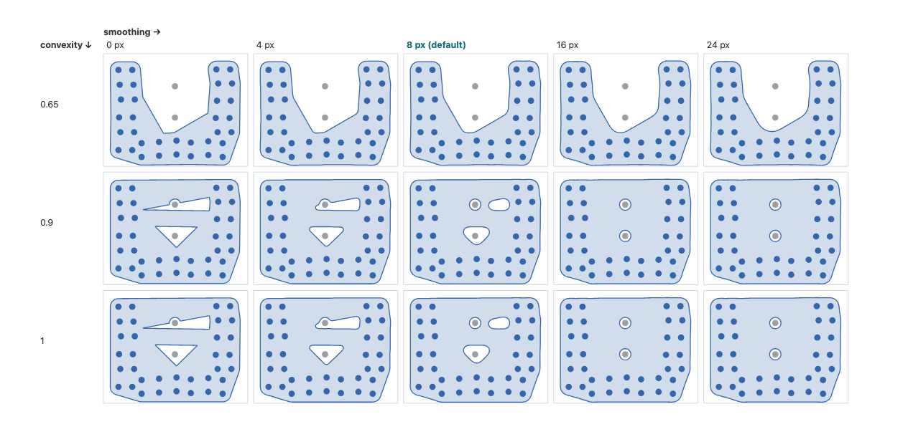
    </div>
    <figcaption>Before: <code>smoothing</code> across.</figcaption>
  </figure>
  <figure>
    <div class="shot wide">
      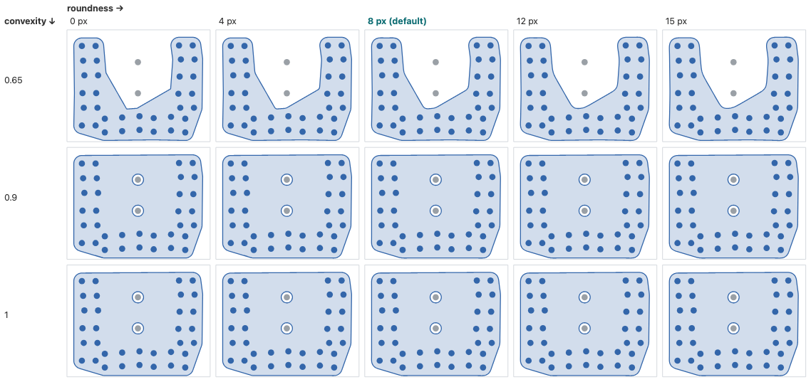
    </div>
    <figcaption>After: <code>roundness</code> across, same rows.</figcaption>
  </figure>
  <p>
    On the hyperedges at convexity 0.25, the old smoothing filled the three
    cycles at 12 px and above, which looked like a higher convexity. With
    roundness the cycles stay open at every value. The holes get smaller as
    their corners round, because a triangle's corners are the part of it that is
    cut. With edges as members (the last row), roundness changes little, because
    the edge members are slim tubes (6.75 px), and roundness stops at the
    smallest circle in the region.
  </p>
  <figure>
    <div class="shot wide">
      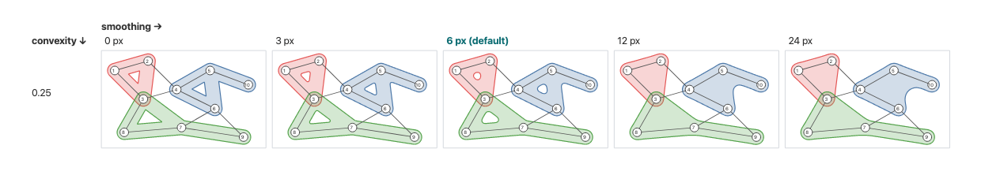
    </div>
    <figcaption>
      Before: <code>smoothing</code> across, with <code>via</code>.
    </figcaption>
  </figure>
  <figure>
    <div class="shot wide">
      
    </div>
    <figcaption>After: <code>roundness</code> across, same row.</figcaption>
  </figure>
  <figure>
    <div class="shot wide">
      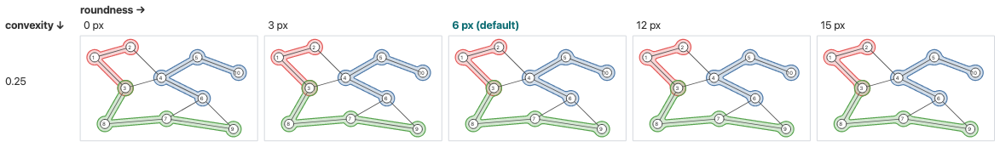
    </div>
    <figcaption>After, with edges as members.</figcaption>
  </figure>

  <h3>Custom shapes and the ellipse</h3>
  <p>
    Josh's ellipse fits the #1101 escape hatch (one extensibility model for
    strategy families, still being designed): a user function in place of a
    <code>Shape</code> value. It receives the members as
    <code>{ box, boundary }</code> in pixels after placement, the box of all
    members, the avoided nodes, and <code>padding</code>, and returns a closed
    outline as a list of points. <code>enclose</code> still paints it below the
    members and uses its box. The Munkres panel in the explorer draws its
    ellipses this way. <code>Shape.ellipse()</code> can become a member later if
    ellipses turn out to be common.
  </p>
  <div class="pair">
    <div>
      <div class="lang">JS</div>
      <pre><code>const oval = ({ box, padding }) =&gt;
  ellipsePoints(box, padding); // user code
enclose({ shape: oval, padding: 30 }, [a, b]);</code></pre>
    </div>
    <div>
      <div class="lang">Python</div>
      <pre><code>enclose([a, b],
        shape=lambda s: ellipse_points(s.box, s.padding),
        padding=30)</code></pre>
    </div>
  </div>

  <h2 id="explorer">Dataset explorer</h2>
  <p>
    To try any setting live, open the
    <a href="https://claude.ai/artifact/AscJNscgnnnSRZReMhTetF"
      >blob playground</a
    >, which has sliders for every parameter on all six datasets.
  </p>
  <p>
    One grid per dataset, all with the same two parameters.
    <strong
      >Columns are <code>convexity</code> (0, 0.25, 0.5, 0.75, 1) and rows are
      <code>roundness</code> (0, half the padding, equal to it, twice it),
      because these are the two blob knobs that change the outline's character:
      what is filled, and how sharply the outline bends.
      <code>padding</code> and <code>clearance</code> are plain distances whose
      effect reads from their names.</strong
    >
    Down a column the pieces and holes never change. The teal frame marks the
    recommended defaults cell (<code>convexity: 0.5</code>,
    <code>neck: 1</code>, <code>roundness</code> equal to <code>padding</code>).
    Where convexity does nothing on a dataset, the columns are
    <code>neck</code> instead, and the grid's header says so.
  </p>

  <div role="tablist" aria-label="Datasets" id="ds-tabs" hidden>
    <button
      role="tab"
      id="tab-topology"
      aria-controls="ds-topology"
      aria-selected="true"
    >
      a, b, c: {a, c} avoiding b
    </button>
    <button
      role="tab"
      id="tab-u"
      aria-controls="ds-u"
      aria-selected="false"
      tabindex="-1"
    >
      U-shaped cloud
    </button>
    <button
      role="tab"
      id="tab-penguins"
      aria-controls="ds-penguins"
      aria-selected="false"
      tabindex="-1"
    >
      Penguins
    </button>
    <button
      role="tab"
      id="tab-hyperedges"
      aria-controls="ds-hyperedges"
      aria-selected="false"
      tabindex="-1"
    >
      Hyperedges over a graph
    </button>
    <button
      role="tab"
      id="tab-trout"
      aria-controls="ds-trout"
      aria-selected="false"
      tabindex="-1"
    >
      Trout across lakes
    </button>
    <button
      role="tab"
      id="tab-munkres"
      aria-controls="ds-munkres"
      aria-selected="false"
      tabindex="-1"
    >
      Munkres panel
    </button>
  </div>

  <section
    role="tabpanel"
    id="ds-topology"
    aria-labelledby="tab-topology"
    tabindex="0"
  >
    <h3>(a) a, b, c with {a, c} avoiding b</h3>
    <pre><code>enclose({ shape: Shape.spine({ avoiding: [b], neck, roundness, clearance: 6 }),
          padding: 22 }, [a, c])</code></pre>
    <figure>
      <div class="shot wide">
        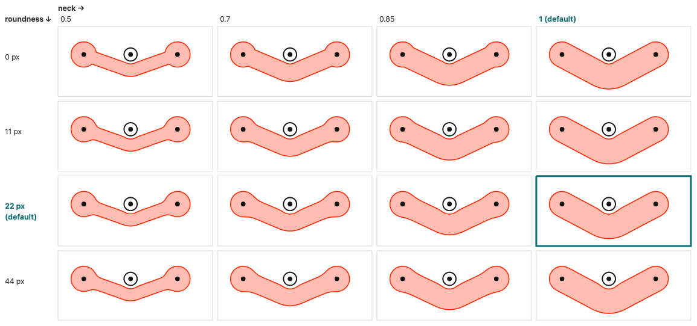
      </div>
      <figcaption>
        <strong>Columns are <code>neck</code></strong> (0.5, 0.7, 0.85, 1): with
        two members there is no triangle to fill and the one link is always
        kept, so every <code>convexity</code> draws the same thing. Rows are
        <code>roundness</code> 0, 11, 22 and 44 px. The band always passes under
        b, because a and c form no triangle that could hold b. Roundness rounds
        the joins between the band and the circles, up to the smallest circle in
        the region (the band's half-width at small <code>neck</code>, else b's
        20 px keep-out circle), so 44 px draws what 22 px draws. The spelling in
        the syntax section (<code>neck: 0.85</code>, <code>roundness</code> at
        its default of 22) is the third row of the third column.
      </figcaption>
    </figure>
  </section>

  <section role="tabpanel" id="ds-u" aria-labelledby="tab-u" tabindex="0">
    <h3>(b) The U-shaped point cloud with non-members inside</h3>
    <pre><code>enclose({ shape: Shape.blob({ convexity, roundness, avoiding: others }),
          padding: 8 }, members)</code></pre>
    <figure>
      <div class="shot wide">
        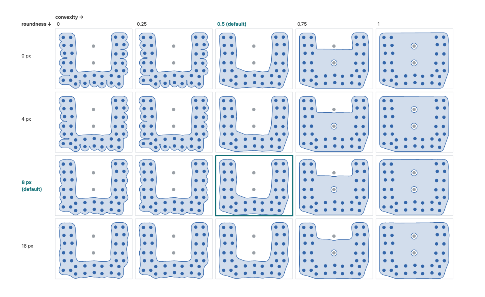
      </div>
      <figcaption>
        At 0 the U is a tree of tubes, wavy along the arms. At 0.5 the
        two-dot-thick arms fill and get straight sides, and the opening stays
        clear. At 0.75 the triangles across the bottom of the opening fill, so
        the lower gray dot is inside and becomes a round hole (drawn white),
        while the upper one sits in a notch. At 1 both gray dots are round
        holes. The holes are the clearance circles at every roundness, so the
        half-rounded triangles of the old grid (History, v6) are gone. Down each
        column only the corners change, and the waves between neighboring dots
        flatten. At 0 and 4 px the spine keeps narrow slits between touching
        dots. Rounding closes a slit up to where it is 1.5 σ wide, so at 4 px
        the slits close only where they are narrowest, and at 8 px they close
        completely; a closed slit is filled, never pinched into a hole.
      </figcaption>
    </figure>
  </section>

  <section
    role="tabpanel"
    id="ds-penguins"
    aria-labelledby="tab-penguins"
    tabindex="0"
  >
    <h3>(c) Penguins: the discrete choice, then the dials</h3>
    <p>
      First the discrete choice. All three species, each with its own outline,
      at <code>padding: 6</code> and the same light fill, so overlaps and fit
      can be compared. Each panel uses the shape's defaults; nothing is avoided.
    </p>
    <pre><code>chart(penguins)
  .flow(group({ by: "Species" }),
        scatter({ x: "Beak Length (mm)", y: "Beak Depth (mm)" }))
  .mark(circle({ r: 2.5, fill: "Species" }))
  .layer(enclose({ shape, padding: 6, fill: "Species", opacity: 0.15 }))
// shape: Shape.box(), Shape.hull(), Shape.blob() or Shape.spine()</code></pre>
    <figure>
      <div class="shot">
        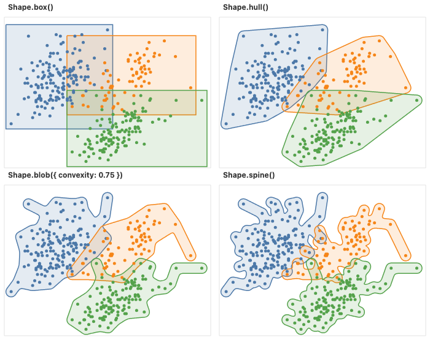
      </div>
      <figcaption>
        The boxes overlap so much that the species blur together. The hulls
        separate them well and are easy to read, with a sliver of overlap
        between each pair. The blob and the spine follow the points closely and
        show where each species is dense; on data this dense they look almost
        the same, because the discs already touch and there is little space left
        for <code>convexity: 0.5</code> to fill. Box and hull are reasonable
        choices here; blob and spine trade a calm outline for a closer fit.
      </figcaption>
    </figure>
    <p>
      Then the dials. The same three species in every cell, convexity by
      roundness.
    </p>
    <pre><code>.layer(enclose({ shape: Shape.blob({ convexity, roundness }),
                padding: 6, fill: "Species", opacity: 0.15 }))</code></pre>
    <figure>
      <div class="shot wide">
        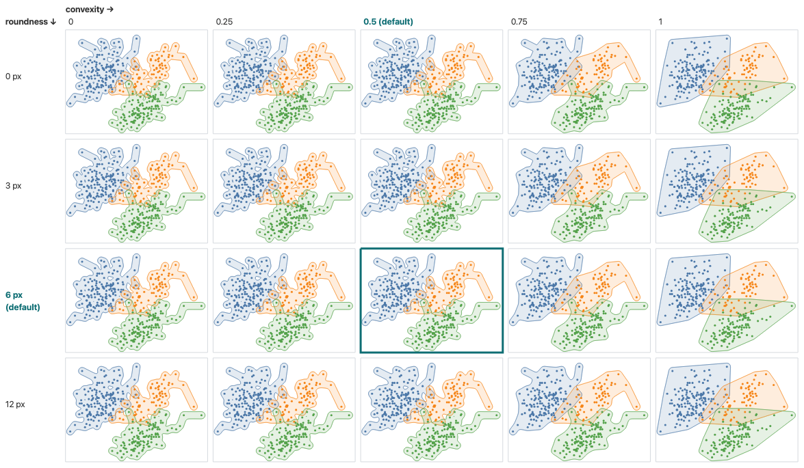
      </div>
      <figcaption>
        The defaults cell is the <code>Shape.blob()</code> panel above, and the
        convexity 1 column is the <code>Shape.hull()</code> panel. At 0.75 each
        species becomes one calm region that still leaves out its empty corners,
        the step between the blob and the hull. Down each column the pieces and
        holes stay the same, and roundness only calms the small bumps between
        neighboring points. Roundness stops at the points' grown radius (8.5 px
        here), so 12 px draws what 8.5 px draws. Adding
        <code>avoiding: selectAll("points")</code> to the blob would cut each
        species' outline away from the other species' points, as the U tab
        shows.
      </figcaption>
    </figure>
  </section>

  <section
    role="tabpanel"
    id="ds-hyperedges"
    aria-labelledby="tab-hyperedges"
    tabindex="0"
  >
    <h3>(d) Hyperedges over a node-link graph</h3>
    <p>
      <span class="tag ok">proposed change</span>
      <strong>The edges are members.</strong> Each set's members are its nodes
      plus the graph edges whose two ends are both in the set. An edge member is
      a line, held inside the outline at <code>padding</code> along its whole
      length, and it already links its two ends. This replaces the earlier
      <code>via</code> parameter (History, v5).
    </p>
    <div class="pair">
      <div>
        <div class="lang">JS</div>
        <pre><code>layer([
  graph, // "nodes" and "edges", keyed by id
  chart(setMembers) // { set, member }
    .flow(
      resolve(["member"], {
        // new: a list of selections
        from: [selectAll("nodes"),
               selectAll("edges")] }),
      group({ by: "set" }))
    .mark(enclose({
      members: "member", // new (decision 9)
      shape: Shape.spine({
        avoiding: selectAll("nodes") }),
      padding: 6, fill: "set", opacity: 0.25 })),
])</code></pre>
      </div>
      <div>
        <div class="lang">Python</div>
        <pre><code>layer([
    graph,
    chart(set_members)
      .flow(resolve(["member"],
                    from_=[select_all("nodes"),
                           select_all("edges")]),
            group(by="set"))
      .mark(enclose(members="member",
          shape=Shape.spine(
              avoiding=select_all("nodes")),
          padding=6, fill="set", opacity=0.25)),
])</code></pre>
      </div>
    </div>
    <figure>
      <div class="shot">
        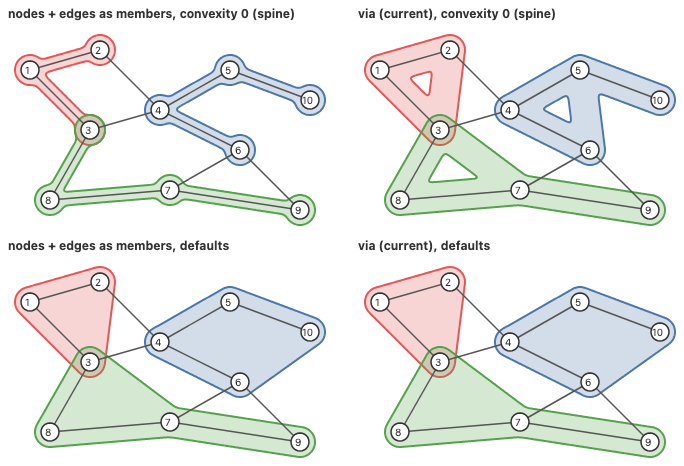
      </div>
      <figcaption>
        <strong
          >Nodes + edges as members (proposed), left;
          <code>via</code> (current), right.</strong
        >
        As a spine (top) the two differ. With edges as members, each set is its
        nodes and its edges, drawn as slim tubes at the padding, and nothing
        else: the members already touch, so the spanning tree adds no link. With
        <code>via</code>, the spanning tree over node centers adds links the
        graph does not have (2 to 3 in set A, 5 to 6 in set B, 3 to 7 in set C),
        and each closes a cycle with a hole in it. At the defaults (bottom) the
        two are the same picture, because the filled triangles cover the edges
        either way.
      </figcaption>
    </figure>
    <figure>
      <div class="shot wide">
        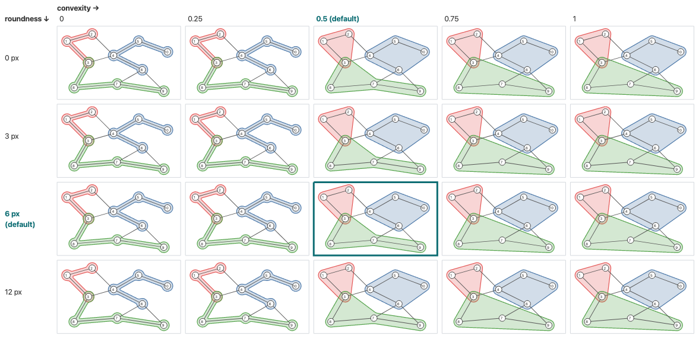
      </div>
      <figcaption>
        The grid on the proposed version. At 0 and 0.25 each set is a tube along
        its own edges. From 0.5 the triangles fill. At 0.75 and 1 set C fills
        the triangle 3, 8, 9, which covers the graph edges 6 to 7 and 4 to 6;
        nodes 4 and 6 stay outside. This is the same as with <code>via</code>:
        edges as members add what must be inside, and say nothing about what
        must stay out.
      </figcaption>
    </figure>
    <figure>
      <div class="shot">
        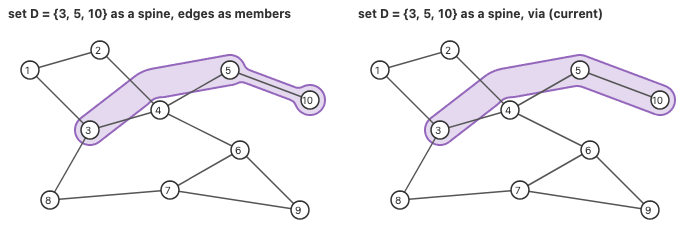
      </div>
      <figcaption>
        <strong>Connected only through a non-member.</strong> Set {3, 5, 10}
        reaches 5 from 3 only through node 4. Its member subgraph is in two
        pieces (node 3, and the edge 5 to 10), and the spanning tree joins them
        with a link routed around node 4, as wide as the node bulge. The
        <code>via</code> version draws the same link.
      </figcaption>
    </figure>
    <figure>
      <div class="shot">
        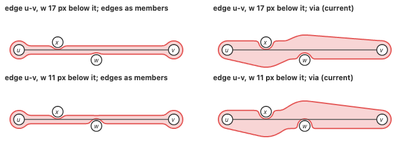
      </div>
      <figcaption>
        <strong>An edge near non-members.</strong> Edge u to v passes x (13 px
        above it) and w (17 px, then 11 px, below it). As a member, the outline
        is a slim tube that clears both with a small notch. With
        <code>via</code> the link is a full-bulge tube, so the cut around w and
        x makes a lopsided shape. At 11 px, w's keep-out zone (its radius plus
        <code>clearance</code>) reaches the edge itself, and both versions let
        <code>clearance</code> win, so the outline touches the drawn edge at w.
        No outline can keep both promises there; the rule is the one that
        applies to a node member near a non-member.
      </figcaption>
    </figure>

    <h4>What the user writes</h4>
    <p>
      The data is two tables: <code>edges</code> rows
      <code>{ id, source, target }</code> and <code>memberships</code> rows
      <code>{ set, node }</code>. "This set's nodes plus the edges among them"
      is built in plain code today:
    </p>
    <div class="pair">
      <div>
        <div class="lang">JS</div>
        <pre><code>const inSet = new Set(
  memberships.map((m) =&gt; `${m.set}/${m.node}`));
const setMembers = [
  ...memberships.map(({ set, node }) =&gt;
    ({ set, member: node })),
  ...sets.flatMap((set) =&gt; edges
    .filter((e) =&gt;
      inSet.has(`${set}/${e.source}`) &amp;&amp;
      inSet.has(`${set}/${e.target}`))
    .map((e) =&gt; ({ set, member: e.id }))),
];</code></pre>
      </div>
      <div>
        <div class="lang">Python</div>
        <pre><code>in_set = {(m["set"], m["node"])
          for m in memberships}
set_members = [
    {"set": m["set"], "member": m["node"]}
    for m in memberships
] + [
    {"set": s, "member": e["id"]}
    for s in sets for e in edges
    if (s, e["source"]) in in_set
    and (s, e["target"]) in in_set
]</code></pre>
      </div>
    </div>
    <p>
      The edge half alone can be written with existing operators:
      <code
        >chart(edges).flow(join(sourceSets, { on: "source" }), join(targetSets,
        { on: "target" }), filter((d) =&gt; d.sourceSet === d.targetSet))</code
      >, where <code>sourceSets</code> and <code>targetSets</code> are
      <code>memberships</code> with its columns renamed. That is awkward, and it
      still cannot be put together with the node rows, because a flow has no
      operator that appends one table's rows to another's. So three things are
      missing, each with a small fix: <code>resolve</code> takes a list of
      selections in <code>from</code> (the nodes and the edges are two layers);
      the edges need a key column (<code>id</code>) so rows can refer to them;
      and <code>enclose</code> needs the <code>members</code> option of decision
      9. The plain-code table is the honest spelling until a flow can append
      rows.
    </p>
    <h4>What it needs from #974</h4>
    <p>
      #974 plans one geometry query per file, with a <code>boundary</code> query
      (a node's own outline) that enters only when something first needs it.
      Edges as members are that first user: the blob needs a line mark's
      geometry (its path and stroke width), not just its box or center, both to
      grow it by <code>padding</code> and to start spanning-tree links at the
      closest point. The prototype reads straight segments; a curved edge would
      need its path as points.
    </p>
    <h4>Box and hull</h4>
    <p>
      Members are just shapes, so <code>Shape.box()</code> and
      <code>Shape.hull()</code> contain line members too, through the same
      query. When both ends of an edge are members, the edge already lies
      inside, since both shapes are convex; it matters only for an edge whose
      end is outside the set.
    </p>
    <h4>What <code>via</code> did that this does not</h4>
    <p>
      Two things, neither needed by an example. <code>via</code> could make the
      outline follow a route it does not draw, but a route the outline follows
      is inside it at the padding anyway, so it might as well be a member; a
      route with no mark can be drawn as an invisible line. And
      <code>via</code> drew each edge as a tube as wide as the node bulge, while
      a member edge is slim (its stroke plus <code>padding</code>); a wider look
      comes from <code>padding</code> or <code>convexity</code>. So
      <code>via</code> can be dropped. With it gone, <code>avoiding</code> is
      the only strategy parameter that holds refs. It could later become a
      second operand role of <code>enclose</code> (the nodes to keep out, beside
      the members); that is not redesigned here.
    </p>
  </section>

  <section
    role="tabpanel"
    id="ds-trout"
    aria-labelledby="tab-trout"
    tabindex="0"
  >
    <h3>(e) Trout across lakes in the grouped bars</h3>
    <pre><code>chart(catch)
  .flow(spread({ by: "lake", dir: "x" }),
        spread({ by: "species", dir: "x", spacing: 9 }))
  .mark(rect({ h: "count", fill: "species" }).name("bars"))
  .layer(chart(selectAll("bars"))
    .flow(filter((d) =&gt; d.species === "trout"))
    .mark(enclose({ shape: Shape.spine({ avoiding: selectAll("bars"),
                                         neck, roundness }),
                    padding: 4, stroke: "#d6580c" })))</code></pre>
    <figure>
      <div class="shot wide">
        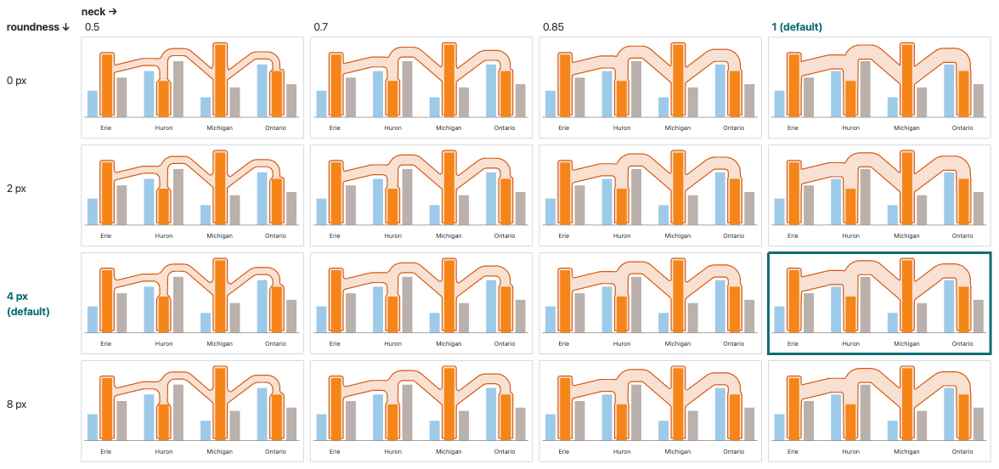
      </div>
      <figcaption>
        <strong>Columns are <code>neck</code></strong> (0.5, 0.7, 0.85, 1),
        because the spine is the useful setting here: the trout bars stand among
        other bars, and a filled triangle between them would hold those bars as
        holes. Each link runs over the bar tops as the shortest path that clears
        the other bars. <code>neck</code> sets the tube's thickness, and
        <code>roundness</code> rounds the bends. The prototype also avoids the
        axis line and its labels (decision 10).
      </figcaption>
    </figure>
  </section>

  <section
    role="tabpanel"
    id="ds-munkres"
    aria-labelledby="tab-munkres"
    tabindex="0"
  >
    <h3>(f) Munkres' three-point topology</h3>
    <p class="small">
      Munkres, <em>Topology</em> (2nd ed., §12), draws the nine topologies on
      {a, b, c}. In the last panel the {a, c} set wraps a and c with an even
      margin and joins them with a thick band under b. The GoFish port's {a, c}
      neighborhood is today a hand-transcribed Bézier path (#717, concave hulls
      for <code>enclose</code>). The whole set and the pairs {a, b} and {b, c}
      are ellipses through the custom-shape function.
    </p>
    <pre><code>layer([a, b, c]).relate(({ a, b, c }) =&gt; [
  enclose({ shape: oval, padding: 30 }, [a, b, c]),
  enclose({ shape: oval, padding: 16 }, [a, b]),
  enclose({ shape: oval, padding: 16 }, [b, c]),
  enclose({ shape: Shape.spine({ avoiding: [b], neck, roundness,
                                 clearance: 6 }),
            padding: 22 }, [a, c]),
])</code></pre>
    <figure>
      <div class="shot wide">
        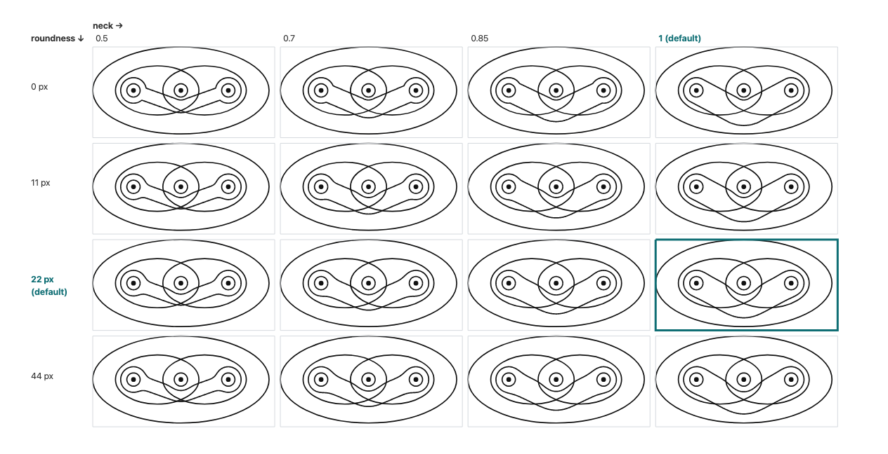
      </div>
      <figcaption>
        <strong>Columns are <code>neck</code></strong
        >, as in (a), since the {a, c} set has two members.
      </figcaption>
    </figure>
    <div class="ref-pair">
      <figure>
        <div class="shot">
          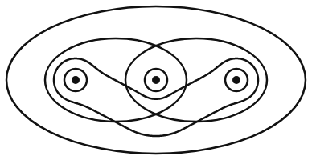
        </div>
        <figcaption>
          The recommended spelling on its own (<code>neck: 0.85</code>,
          <code>padding: 22</code>, <code>roundness</code> at its default).
        </figcaption>
      </figure>
      <figure>
        <div class="shot">
          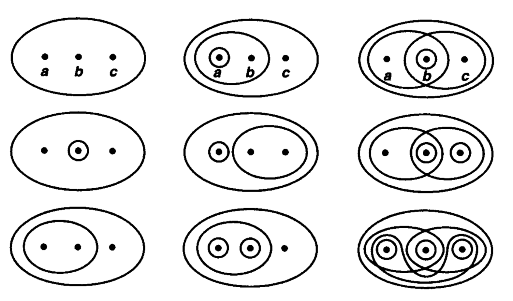
        </div>
        <figcaption>
          Reference: Munkres, Figure 12.1, from the Math3ma post
          <a href="https://math3ma.com/blog/topology-vs-a-topology"
            >"Topology vs. 'A Topology' (cont.)"</a
          >.
        </figcaption>
      </figure>
    </div>
    <p>
      Matched: even margins around a and c, a thick band, and smooth joins.
      Still different: the bottom of the band is a wide V rather than Munkres'
      flatter bottom, because the link is the shortest path around b. A link
      rule that bends the band to follow b's outline at a fixed gap would get
      closer, and is a change to routing rather than a new parameter.
    </p>
  </section>

  <h2 id="hull-check">The hull preset is within half a pixel</h2>
  <p>
    Before rounding the hull shortcut is exact: with nothing avoided, every
    Delaunay triangle is filled and every hull edge is a tube as wide as the
    bulge, so the union is the convex hull grown by the bulge. Rounding keeps
    the circles and the straight sides where they are and changes only the joins
    between them, where the curvature steps from 1/<em>R</em> to 0. Measured
    against a true padded convex hull (black line), the outline is within 0.2 px
    of it with <code>roundness</code> equal to <code>padding</code> (U and
    Gentoo), and within 0.3 px at <code>roundness: 15</code>, the most the U
    allows.
  </p>
  <figure>
    <div class="shot">
      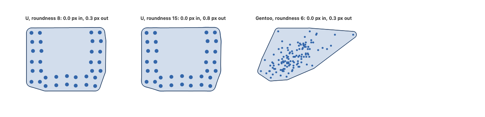
    </div>
  </figure>
  <p>
    The spine shortcut draws exactly the members and the routed spanning tree,
    rounded. At <code>convexity: 0</code> alpha is 0, so no triangle is filled
    and no extra edge is added, and since there is no closing, nothing else is
    filled either.
  </p>

  <h2 id="curvature">The curvature never jumps</h2>
  <p>
    Josh's requirement: "I don't want to see a shape curvature change when the
    circle connects to the link." Below is the {a, c} outline of the syntax
    section's spelling. Left: the outline with its curvature comb, a short tooth
    across the outline at many points with length proportional to the curvature
    there. Right: curvature against distance along the outline from the leftmost
    point, from the circle through the outline points 3 px before and after each
    point, every 0.5 px. The gray lines mark 1/<em>R</em>
    (a's circle) and −1/40 for scale.
  </p>
  <figure>
    <div class="shot wide">
      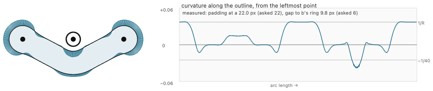
    </div>
    <figcaption>
      The curve moves smoothly between 1/<em>R</em> around the circles, about 0
      along the band, and negative values at the joins, with every change spread
      over about 20 px of outline. Under b the band follows b's keep-out circle,
      so there the curvature is that circle's, and it turns into and out of it
      over about 10 px. Padding at a is 22.0 px (asked 22), and the gap to b's
      ring is 7.6 px, more than the 6 px asked: near a keep-out zone the rounded
      outline is pushed out by a smooth maximum of its gap and 0.
    </figcaption>
  </figure>

  <h2 id="penguins">One outline per group: penguins and <code>by</code></h2>
  <p>
    The points are named, and a second layer groups them and draws one hull per
    group (code in the syntax section).
  </p>
  <div class="grid2">
    <figure>
      <div class="shot">
        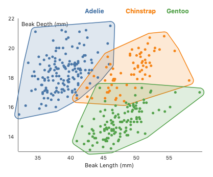
      </div>
      <figcaption><code>Shape.hull()</code></figcaption>
    </figure>
    <figure>
      <div class="shot">
        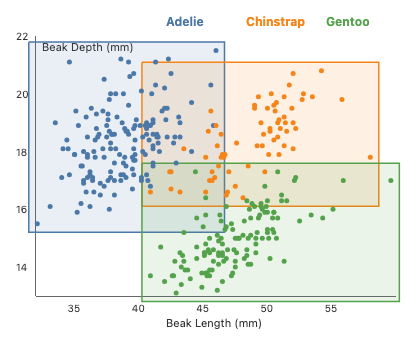
      </div>
      <figcaption><code>Shape.box()</code>, same data</figcaption>
    </figure>
  </div>
  <p>
    The boxes overlap so much that they stop separating the species; the hulls
    show where each species actually lies. (Prototype: axes are hand-drawn.)
  </p>
  <ul>
    <li>
      <strong>Why not <code>enclose({ by: "Species" })</code>?</strong> #752
      (the default-split rule for relational marks) removed <code>by</code> from
      <code>line</code> and <code>ribbon</code>. Splits are written in the flow,
      so a <code>by</code> on <code>enclose</code> would bring back a second
      spelling. Josh is open to bringing <code>by</code> back later, when the
      design of stacked and divided ribbons in #47 is worked out (a ribbon today
      joins one element to one element; #47 asks for one-to-many, like a join
      between a source set and a target set). #740, a spike on whether
      <code>group()</code> plus <code>resolve()</code> covers regrouping refs
      for connectors, is related.
    </li>
    <li>
      <strong>Dependency.</strong> This spelling goes through the same
      <code>chart(selectAll(...)).flow(group({ by }))</code> path that #877
      reports as broken for <code>ribbon</code>: the <code>group</code> is
      ignored, and the fused default threads the inner tier instead. It likely
      needs that fix for <code>enclose</code> too. Unverified for
      <code>enclose</code>; the prototype does not exercise that path.
    </li>
    <li>
      <strong>The shorter form</strong>, <code>group</code> in the first layer's
      flow followed by a fused
      <code>.layer(enclose({ shape: Shape.hull(), ... }))</code>, also works
      when the grouping is already there for other reasons.
    </li>
  </ul>

  <h2 id="future">Future work: placing points and regions together</h2>
  <p>
    Not part of this proposal: the Munkres example may be drawn best by placing
    the points and the region together, with an energy that pushes shapes apart
    and rewards symmetry, as Penrose and Keenan Crane's work do. Every strategy
    here draws around shapes that are already placed, so that would be a change
    to layout, not a new shape.
  </p>

  <h2 id="decisions">Open decisions</h2>
  <ol class="decisions">
    <li>
      Keep <code>enclose</code> as the one name and delete
      <code>background</code>? (Or keep <code>background</code>; or rename to
      <code>hull</code>.)
    </li>
    <li>
      Make <code>enclose</code> a relational mark now and defer any
      <code>.background()</code> modifier?
    </li>
    <li>
      One general member with two shortcuts: name it <code>blob</code> (or
      <code>kelp</code>, <code>bubble</code>), and keep the shortcut names
      <code>hull</code> and <code>spine</code>?
    </li>
    <li>
      Option key and family <code>shape: Shape.*</code>, or
      <code>outline: Outline.*</code>?
    </li>
    <li>
      The blob's parameters and defaults: <code>convexity</code> 0.5,
      <code>roundness</code> equal to <code>padding</code>, <code>neck</code> 1,
      <code>clearance</code> 4 px (the teal cells in the explorer)?
    </li>
    <li>
      <code>avoiding</code> on <code>Shape.blob()</code>, so on both shortcuts,
      avoiding listed non-members only, with
      <code>Shape.hull({ avoiding })</code> drawing the hull with each other
      node inside it cut out as a round hole?
    </li>
    <li>
      Draw ellipses through the #1101 custom-shape function first, and add
      <code>Shape.ellipse()</code> only when examples call for it?
    </li>
    <li>
      Move <code>rx</code>/<code>ry</code> into
      <code>Shape.box({ rx, ry })</code>?
    </li>
    <li>
      For rows that carry refs, name the ref column with <code>members</code>,
      like <code>line({ from, to })</code>? The hyperedge example also needs
      <code>resolve</code> to take a list of selections.
    </li>
    <li>
      In a chart, should a spine stay inside the plot area by rule, or should
      the user list the axis in <code>avoiding</code> (the trout example)?
    </li>
    <li>
      The two shape knobs: <code>convexity</code> (what is filled, 0 to 1,
      scaled to the point spacing) and <code>roundness</code> (corner rounding
      in pixels, never changing the topology)? Is <code>roundness</code> the
      right name? (Alternative: <code>cornerRadius</code>, the pixel corner
      radius of Vega-Lite's marks and Figma.)
    </li>
    <li>
      Keep all rounding inside <code>Shape.blob()</code> (the outline rounding),
      and add no <code>curve</code> key to <code>enclose</code>? (History, v4,
      shows why a curve through the outline cannot keep <code>padding</code> or
      <code>clearance</code>.)
    </li>
    <li>
      <strong>Confirm:</strong> drop <code>via</code> in favor of enclosing the
      edges themselves as members (the hyperedges tab)? Box and hull contain
      line members too, since members are just shapes, and the blob reads their
      geometry through #974's <code>boundary</code> query.
    </li>
    <li>
      Should <code>roundness</code> go past the smallest circle in the region,
      so a hull's corners can round more than the members' grown radius? The
      cost is that <code>padding</code> and <code>clearance</code> become
      approximate near those circles.
    </li>
  </ol>

  <!-- ───────────────────────── Part 2 ───────────────────────── -->
  <div class="part">Part 2 · Context</div>

  <h2 id="tensions">Josh's tensions, answered</h2>
  <div class="grid3">
    <div class="card">
      <h4>Relational mark or operator?</h4>
      <p>
        What decides it is the kind of operands, not the construct (#707, one
        combinator indexed by operand kind): fresh children behave like an
        operator, refs like a connector, a mix is an open term.
        <code>enclose</code> is used all three ways today, so it stays one
        construct. Over fresh children the combinator form <em>is</em> the
        component: it lays out its children, has a box, can be named and pointed
        at. A user-supplied drawn shape, as in Bluefish's callback, is the #1101
        function escape hatch.
      </p>
    </div>
    <div class="card">
      <h4>A SwiftUI modifier?</h4>
      <p>
        SwiftUI's <code>.background</code> decorates one view.
        <code>enclose(opts, [node])</code> already does that, so a
        <code>.background()</code> modifier would be exact sugar, and on an
        operator it could give one background per group like
        <code>.label()</code> (#750). It cannot reach nodes that live in
        different places (Topology, hyperedges, one species across lakes). Kept
        as the runner-up.
      </p>
    </div>
    <div class="card">
      <h4>Containment or connection?</h4>
      <p>
        Both, and the literature says so: the set survey files Bubble Sets as
        regions, the hypergraph survey as node-link, and KelpFusion is one dial
        from spanning tree to convex hull. So the design keeps it in the
        relational-mark family (with <code>line</code>, <code>ribbon</code>),
        makes connection versus containment one dial (<code>convexity</code>) on
        one member, and lets real connections, such as a graph's edges, be
        members themselves.
      </p>
    </div>
  </div>

  <h2 id="approaches">Where it lives: three approaches</h2>
  <p>
    How the strategies are spelled is a separate axis (next section); all three
    approaches use <code>shape: Shape.*</code>.
  </p>
  <h3>
    Approach A: <code>enclose</code> becomes a relational mark
    <span class="tag ok">recommended</span>
  </h3>
  <p>
    Rebuilt with <code>createRelationalMark</code> instead of
    <code>createNodeOperator</code>. Keeps the combinator form for fresh
    children, refs or a mix; gains the bag form, fusion, the #752 split,
    per-group paint and the paint-below default. The component case is unchanged
    except for the corner option:
  </p>
  <figure>
    <div class="shot">
      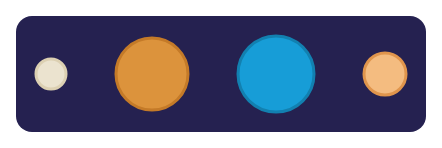
    </div>
  </figure>
  <p>
    <strong>How it composes.</strong> <code>enclose(opts, operands)</code> is
    <code>layer(operands)</code> plus one outline node computed after the
    operands are placed, the framing #713 already uses ("enclose = layer + hull
    ink"). The outline is computed from each operand's <code>boundary</code>
    (#974, a geometry query for a node's outline as points; box corners when a
    mark has no better answer). No new core node kind. Its box is the box of the
    drawn outline (#707's ink rule). Under animation the outline is recomputed
    each frame; how it should tween is out of scope.
  </p>
  <p>
    <strong>Overlap check.</strong> <code>layer</code>: exact composition.
    <code>Constraint.nest</code> with a <code>rect</code> outer, and
    <code>rect</code> plus <code>align</code> span: agree with box mode in
    degenerate cases; build box mode through the same code as <code>nest</code>.
    <code>line</code>/<code>ribbon</code>: a two-member spine looks like a thick
    line, degenerate. <code>subtract</code>: not an overlap. <code>pack</code>:
    its enclosing circle is a possible future <code>Shape.circle()</code>.
  </p>
  <p>
    <strong>Trade-offs.</strong> One name, one mental model, every hard example
    expressible. New terms: <code>Shape</code>, <code>blob</code>,
    <code>hull</code>, <code>spine</code>, <code>convexity</code>,
    <code>roundness</code>, <code>neck</code>, <code>avoiding</code>,
    <code>clearance</code>. Awkward: the per-group background behind each lake
    needs
    <code
      >chart(selectAll("bars")).flow(group({ by: "lake"
      })).mark(enclose())</code
    >, longer than a modifier.
  </p>

  <h3>Approach B: a <code>.background()</code> modifier only (SwiftUI)</h3>
  <div class="ex">
    <div>
      <pre><code>text("H").background({ padding: 4, fill: "#ffe8a3" })
chart(catch)
  .flow(spread({ by: "lake", dir: "x" })
          .background({ padding: 8, fill: "#f0f1f3" }),
        spread({ by: "species", dir: "x", spacing: 9 }))
  .mark(rect({ h: "count", fill: "species" }))</code></pre>
      <p class="small">
        Desugars to the <code>enclose</code> combinator around the node. Short
        for one-node decorations and per-group panels. Fails every hard example:
        the Topology set, hyperedges and the trout set are not single nodes of
        the tree. It would still need <code>enclose</code> for refs, so it is a
        second spelling, not a replacement.
      </p>
    </div>
    <figure>
      <div class="shot">
        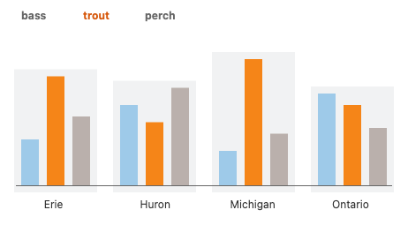
      </div>
      <figcaption>
        Prototype: story-local boxes; <code>enclose</code> per group would draw
        the same.
      </figcaption>
    </figure>
  </div>

  <h3>
    Approach C: A plus the modifier as sugar
    <span class="tag">runner-up</span>
  </h3>
  <p>
    Everything in A, plus <code>x.background(opts)</code> =
    <code>enclose(opts, [x])</code> (and per group on operators). Allowed as
    exact composition, but one concept gets two names.
    <strong>What would make it the pick:</strong>
    real examples where per-node or per-group backgrounds inside a flow are the
    common case, such as label pills, facet panel backgrounds and zebra stripes.
  </p>

  <h2 id="spelling">How strategies and parameters are spelled</h2>
  <div class="grid3">
    <div class="card">
      <h4>S1 · shape: Shape.* <span class="tag ok">recommended</span></h4>
      <p>
        One option with a family; <code>padding</code> and paint stay on
        <code>enclose</code>; each strategy carries only the parameters it uses.
        Default <code>Shape.box()</code>, today's behavior.
      </p>
    </div>
    <div class="card">
      <h4>S2 · box() / hull() / spine()</h4>
      <p>
        One function per strategy, as in ggforce. Splits one concept into three
        operators, against "one concept is one operator" and the #397/#717
        direction.
      </p>
    </div>
    <div class="card">
      <h4>S3 · shape: "hull" + flat options</h4>
      <p>
        Strings with <code>convexity</code> and <code>avoiding</code> on
        <code>enclose</code> (#717 comment). Rejected by #1013: a family with
        arguments is a namespace of calls, and flat options would be accepted
        and ignored by strategies that do not use them.
      </p>
    </div>
  </div>

  <h2 id="nearby">Nearby GoFish decisions</h2>
  <div class="tablewrap">
    <table>
      <tr>
        <th>Decision</th>
        <th>What was decided</th>
        <th>This design</th>
      </tr>
      <tr>
        <td>Strategy namespaces (#1013)</td>
        <td>
          An option whose value is one of several strategies gets an uppercase
          family of calls; family type inside the namespace; Python module bound
          as the family.
        </td>
        <td>
          <strong>Matches.</strong> <code>Shape.box()</code>,
          <code>Shape.blob()</code>, <code>Shape.hull()</code>,
          <code>Shape.spine()</code>, type <code>Shape.Shape</code>, Python
          <code>from gofish import Shape</code>.
        </td>
      </tr>
      <tr>
        <td>Presets over one general strategy (#1018)</td>
        <td>
          <code>sina()</code> and <code>jitter()</code> are
          <code>noise()</code> with params preset; they emit
          <code>kind: "noise"</code>; any option overrides a preset.
        </td>
        <td>
          <strong>Matches.</strong> <code>hull</code> and <code>spine</code> are
          <code>blob</code> with <code>convexity</code> (and for hull,
          <code>neck</code>) preset.
        </td>
      </tr>
      <tr>
        <td>One-strategy options (three-surfaces.md, <code>pack</code>)</td>
        <td>An option with one strategy has no option at all.</td>
        <td>
          <strong>Matches.</strong> Two members plus two presets, so the option
          earns its place.
        </td>
      </tr>
      <tr>
        <td>Closed families plus escape hatch (#1101)</td>
        <td>
          Families are closed; a user function is the planned escape hatch.
        </td>
        <td>
          <strong>Matches.</strong> Custom shapes and the ellipse go there.
        </td>
      </tr>
      <tr>
        <td>
          <code>curve</code> on <code>line</code>/<code>ribbon</code> (#637)
        </td>
        <td>
          One key picks a relational mark's drawn geometry, computed in screen
          space after placement.
        </td>
        <td>
          <strong>Matches.</strong> <code>shape</code> is to
          <code>enclose</code> what <code>curve</code> is to <code>line</code>.
        </td>
      </tr>
      <tr>
        <td>Relational marks and <code>.layer()</code> (#745)</td>
        <td>
          Relational marks paint below their operands;
          <code>.layer()</code> hands each tier the previous tier's marks.
        </td>
        <td>
          <strong>Matches.</strong> A background is the clearest case of
          painting below what it relates.
        </td>
      </tr>
      <tr>
        <td>Blank fusion (#748)</td>
        <td>
          <code>.mark(R(opts))</code> becomes
          <code>.mark(blank(anchor)).layer(R(rest))</code>.
        </td>
        <td><strong>Matches</strong>, inherited.</td>
      </tr>
      <tr>
        <td>Default split (#752)</td>
        <td>
          A fused relational mark splits on every flow grouping except the path
          tier.
        </td>
        <td>
          <strong>Matches.</strong> <code>group(Species)</code> then
          <code>scatter</code> plus <code>.layer(enclose())</code> gives one
          hull per species.
        </td>
      </tr>
      <tr>
        <td>Plural refs never auto-map (#707)</td>
        <td>
          One outline around the whole selection; per element needs
          <code>.each</code>.
        </td>
        <td><strong>Matches.</strong></td>
      </tr>
      <tr>
        <td><code>relate()</code> drawing clauses (#878, #930)</td>
        <td>Clauses may hold ink such as <code>background</code> over refs.</td>
        <td>
          <strong>Matches</strong>, and inherits #986 (drawing clauses miss the
          paint-below default).
        </td>
      </tr>
      <tr>
        <td><code>padding</code> vs <code>spacing</code> (#1005)</td>
        <td><code>padding</code> = inset around the outer edge.</td>
        <td><strong>Matches.</strong></td>
      </tr>
      <tr>
        <td>Geometry queries (#966, #968, #974)</td>
        <td>
          One file per query; <code>boundary</code> enters with its first user.
        </td>
        <td>
          <strong>Matches.</strong> This is the first user #974 waits for.
        </td>
      </tr>
      <tr>
        <td>Modifier versus option (shape geometry, 10-03)</td>
        <td>
          <code>overlap</code> stays an option; modifiers apply to any mark or
          operator.
        </td>
        <td>
          <strong>Consistent.</strong> A modifier is legitimate here; deferred
          on "one concept, one spelling".
        </td>
      </tr>
      <tr>
        <td><code>.label()</code> on operators (#741, #750)</td>
        <td>A modifier on an operator yields one label per group.</td>
        <td>
          <strong>Precedent</strong> for Approach B's per-group background.
        </td>
      </tr>
      <tr>
        <td>
          Refs inside a strategy argument (<code>Curve.bundle({ via })</code>
          note)
        </td>
        <td>
          Secondary geometry is a strategy argument, never columns in the flow.
        </td>
        <td>
          <strong>Matches</strong> in spirit:
          <code>Shape.blob({ avoiding })</code>. With <code>via</code> dropped,
          <code>avoiding</code> is the only strategy parameter that holds refs.
          It could later become a second operand role of <code>enclose</code>;
          not redesigned here.
        </td>
      </tr>
      <tr>
        <td>No back-compat; delete, don't gate</td>
        <td>No aliases, no accepted-and-ignored options.</td>
        <td>
          <strong>Matches.</strong> <code>background</code> deleted;
          <code>rx</code>/<code>ry</code> move into <code>Shape.box()</code>.
        </td>
      </tr>
      <tr>
        <td>Python surface (#1008)</td>
        <td>
          Children positional, snake_case kwargs,
          <code>Family.member()</code> strategies.
        </td>
        <td><strong>Matches.</strong></td>
      </tr>
      <tr>
        <td>Designer names, survey first (#196, #404, #762)</td>
        <td>Prefer names designers know; survey precedent before naming.</td>
        <td>
          Partly. <code>box</code> and <code>hull</code> have strong precedent;
          <code>spine</code> is Josh's name; <code>blob</code> follows Bluefish.
        </td>
      </tr>
    </table>
  </div>
  <p class="small">
    Where it departs: from Josh's #717 comment, shapes are family calls instead
    of strings, <code>avoiding</code> lives on <code>Shape.blob()</code>, and a
    separate <code>alpha</code> member is not needed since
    <code>convexity</code> is alpha on a unitless scale; from #397's
    <code>bubbleset: true</code>, a boolean cannot grow into several strategies.
    Not re-asked: #935, #954, #1053/#1054, #290.
  </p>

  <h2 id="precedent">Precedent</h2>
  <div class="grid3">
    <div class="card">
      <h4>Globs (Steve Ruiz)</h4>
      <div class="shot">
        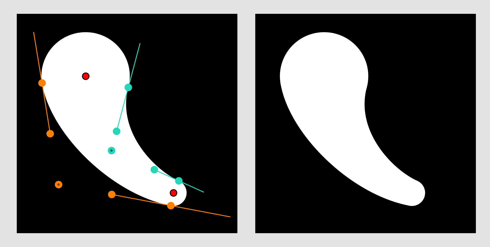
      </div>
      <p>
        "A globs-based vector editor" (<a href="https://globs.design"
          >globs.design</a
        >, <a href="https://github.com/steveruizok/globs">source</a>), by the
        author of perfect-freehand and perfect-arrows, which GoFish already
        uses. It implements Andrew Glassner's glob ("Globs: A Primitive Shape
        for Graceful Blends Between Circles", JCGT 4(3), 2015): two circles of
        any radii joined by a neck of two Bézier curves that leave each circle
        along a tangent, shaped by four handles. You place nodes, connect them
        with globs, and drag handles; a glob follows its nodes.
      </p>
      <p>
        <strong>Compared with the blob:</strong> globs are hand-placed pairs;
        the blob computes every neck for any number of members, fills between
        them, and keeps non-members out. Glassner's neck meets the circle along
        a tangent (G1); his page does not claim curvature continuity, while the
        blob is G2 everywhere. The shared look is round ends and necks that
        narrow and widen gracefully. A glob is a candidate output for the #1101
        function, and its neck handles are a reference for a better link rule in
        the Munkres panel.
      </p>
      <p>
        Image: Glassner's page (<a href="https://glassner.com/?p=3004"
          >glassner.com/?p=3004</a
        >; file <code>Globs-design.png</code>). Left: circle centers (red) and
        neck handles; right: filled. globs.design renders client side and
        yielded no image.
      </p>
    </div>
    <div class="card">
      <h4>SwiftUI</h4>
      <div class="noimg">no image obtained</div>
      <pre><code>view.background(.blue,
  in: RoundedRectangle(cornerRadius: 8))</code></pre>
      <p>
        Modifier on one view; shape is a value.
        <a
          href="https://developer.apple.com/documentation/swiftui/view/background(alignment:content:)"
          >docs</a
        >
      </p>
    </div>
    <div class="card">
      <h4>Bluefish</h4>
      <div class="shot">
        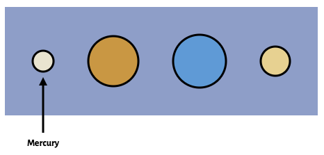
      </div>
      <pre><code>Background({ padding: 40 },
  [Ref("label"), Ref("mercury")])</code></pre>
      <p>
        Relation over refs, filed beside Arrow; box only; custom shape callback.
        <a
          href="https://github.com/joshpoll/bluefish-monorepo/blob/main/docs/learn/tutorial-2-relations.md"
          >source</a
        >
      </p>
    </div>
    <div class="card">
      <h4>TikZ fit</h4>
      <div class="shot">
        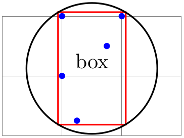
      </div>
      <pre><code>\node[draw, circle,
  fit=(a)(b)(c)] {};</code></pre>
      <p>
        A node fitted to nodes; outline shape separate.
        <a href="https://tikz.dev/library-fit">source</a>
      </p>
    </div>
    <div class="card">
      <h4>Graphviz</h4>
      <div class="shot">
        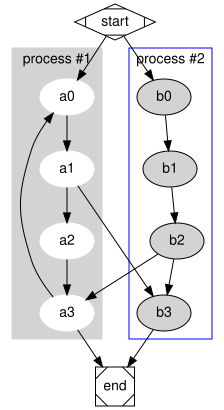
      </div>
      <pre><code>subgraph cluster_0 { a0 -&gt; a1 }</code></pre>
      <p>
        Structural group the layout honors; box, tree only.
        <a href="https://graphviz.org/Gallery/directed/cluster.html">source</a>
      </p>
    </div>
    <div class="card">
      <h4>ggforce</h4>
      <div class="shot">
        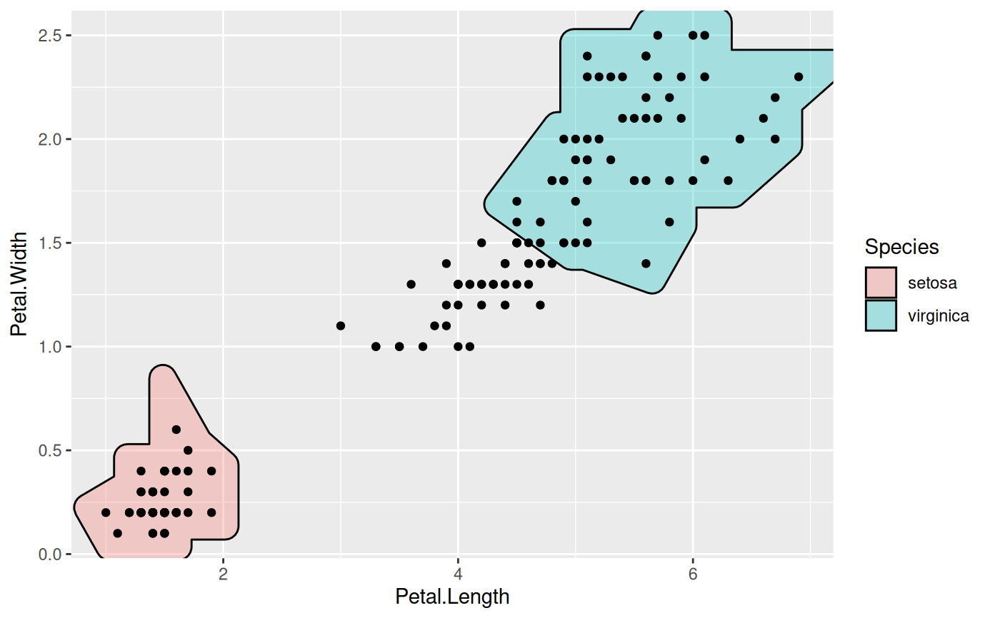
      </div>
      <pre><code>geom_mark_hull(aes(fill = Species),
  concavity = 1, expand = unit(5, "mm"))</code></pre>
      <p>
        One geom per shape; shared <code>expand</code>, <code>radius</code>.
        <a
          href="https://ggforce.data-imaginist.com/reference/geom_mark_hull.html"
          >source</a
        >
      </p>
    </div>
    <div class="card">
      <h4>Observable Plot</h4>
      <div class="shot">
        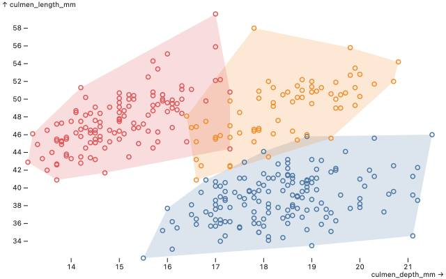
      </div>
      <pre><code>Plot.hull(penguins,
  { x, y, fill: "species" })</code></pre>
      <p>
        Convex only; groups by fill.
        <a href="https://observablehq.com/@observablehq/plot-convex-hull"
          >source</a
        >
      </p>
    </div>
    <div class="card">
      <h4>bubblesets-js</h4>
      <div class="shot">
        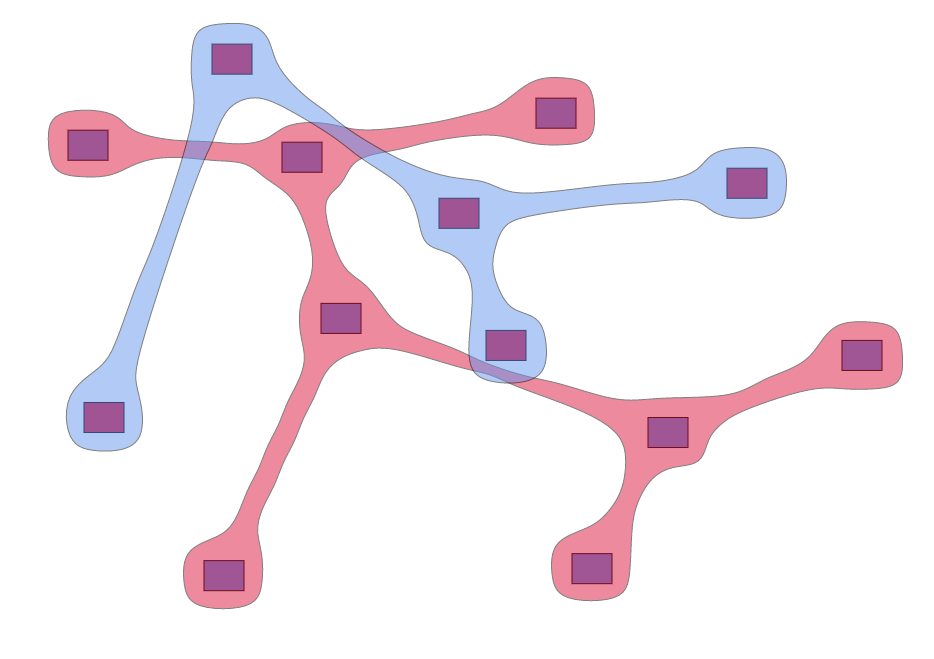
      </div>
      <pre><code>createOutline(members,
  nonMembers, edges, options)</code></pre>
      <p>
        Members, non-members, real edges in.
        <a href="https://github.com/upsetjs/bubblesets-js">source</a>
      </p>
    </div>
    <div class="card">
      <h4>KelpFusion</h4>
      <div class="shot">
        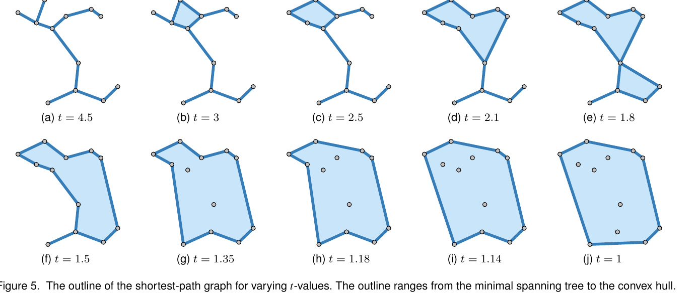
      </div>
      <pre><code>(paper; no API)</code></pre>
      <p>
        Graph dial <code>t</code> from spanning tree to convex hull, plus a
        face-size limit <code>A</code> (History, v2).
      </p>
    </div>
  </div>
  <p>
    <strong>What GoFish should take:</strong> one name with a shape value
    (SwiftUI, Compose, TikZ), a relation over refs that also nests (Bluefish), a
    shared <code>padding</code> plus one knob per strategy (ggforce), members,
    non-members and real edges as the blob's inputs (bubblesets-js).
    <strong>Not:</strong> one function per shape (ggforce), grouping inferred
    from the color channel (Plot), field-physics knobs.
  </p>
  <p>
    <strong>Names.</strong> <code>box</code> matches TikZ and ggforce's
    <code>rect</code>; <code>hull</code> matches Plot, ggforce, d3 and the
    roadmap. No library says "spine"; Bubble Sets and Josh's #717 comment say
    "bubble". <code>spine</code> names the connecting skeleton and reads well
    over a graph ("a spine along these edges"). For the general member,
    <code>kelp</code> means little to most readers, <code>bubble</code> names a
    different algorithm, <code>region</code> collides with the
    region-compositing operators, <code>outline</code> is a candidate option
    key, and <code>set</code> shadows JavaScript's <code>Set</code>;
    <code>blob</code> is an everyday word and Bluefish's name for a hand-drawn
    set outline.
  </p>
  <p>
    <strong>The knobs.</strong> ggforce's and concaveman's
    <code>concavity</code> grows more convex; alpha is a radius in CGAL and an
    inverse radius in Python's <code>alphashape</code>.
    <code>convexity</code> reads its direction from the name and has no unit.
    <code>roundness</code> is a pixel length, bigger is rounder; it is the plain
    word for the property, and its unit matches the pixel corner radius of CSS
    (<code>border-radius</code>), Vega-Lite (<code>cornerRadius</code>) and
    Figma. It is not called <code>smoothing</code>, because
    <code>smoothing</code> on <code>noise()</code> and the old blob knob both
    change what is filled, and <code>roundness</code> never does.
    <code>neck</code> is the everyday word for the narrow join, and also
    Glassner's word for the part of a glob between its circles.
  </p>

  <h2 id="issues">Related issues</h2>
  <ul class="small">
    <li>
      <strong>#397</strong> Bring back a bubble-set enclosure after
      <code>wrap</code> was deleted.
    </li>
    <li>
      <strong>#717</strong> Concave hulls for <code>enclose</code>; Josh's
      comment proposes one <code>enclose</code> with a <code>shape</code>, an
      <code>avoiding</code> list, and "relation, not function".
    </li>
    <li>
      <strong>#974</strong> A <code>boundary</code> geometry query; hulls are
      its first user.
    </li>
    <li>
      <strong>#1138</strong> Roadmap: "Hulls: a group of marks in, a path out".
    </li>
    <li>
      <strong>#707</strong> Operators over placed nodes: one combinator indexed
      by operand kind.
    </li>
    <li>
      <strong>#929</strong> Remaining <code>relate()</code> steps, including
      <code>.each</code> templates.
    </li>
    <li>
      <strong>#986</strong> Paint-below default not applied to
      <code>.relate()</code> drawing clauses.
    </li>
    <li><strong>#935</strong> (parked) relate() follow-ups; not re-asked.</li>
    <li>
      <strong>#752</strong> Default split for fused relational marks; enclose
      follows it with order ignored.
    </li>
    <li>
      <strong>#1101</strong> Extensibility model for strategy families (custom
      curves, tiles, overlaps).
    </li>
    <li><strong>#1013</strong> One uppercase namespace per strategy family.</li>
    <li><strong>#802</strong> Operators cannot be <code>.name()</code>d.</li>
    <li>
      <strong>#844</strong> A <code>ref()</code> to a constraint-placed sibling
      lands at the origin; repro is an <code>enclose</code> over a ref.
    </li>
    <li><strong>#171</strong> Enclose broken for the nested waffle chart.</li>
    <li>
      <strong>#1109</strong> Annotation tutorial; enclose around selected marks.
    </li>
    <li>
      <strong>#1084</strong> Venn docs example, an Euler-diagram neighbor.
    </li>
    <li>
      <strong>#396, #713, #714, #716</strong> <code>wrap</code> deleted; enclose
      = layer + hull ink; enclose paints behind its children.
    </li>
    <li>
      <strong>#47</strong> Stacked and divided ribbons; where <code>by</code> on
      relational marks may come back.
    </li>
    <li>
      <strong>#877</strong> <code>selectAll</code> plus
      <code>group({ by })</code> before a ribbon is ignored; the penguin
      spelling uses the same path.
    </li>
    <li>
      <strong>#740</strong> Spike: does <code>group()</code> plus
      <code>resolve()</code> cover regrouping refs for connectors?
    </li>
    <li>
      <strong>#1018</strong> <code>noise()</code> with <code>sina()</code> and
      <code>jitter()</code> as presets: the model for the shortcuts.
    </li>
    <li>
      <strong>#957</strong> Better screen-space curves than Catmull-Rom; asks
      about closed curves for enclosures.
    </li>
  </ul>

  <h2 id="changes">Syntax changes to review</h2>
  <div class="tablewrap">
    <table>
      <tr>
        <th>Today</th>
        <th>Proposed</th>
      </tr>
      <tr>
        <td>
          <code>background({ padding: 20, rx: 16, ry: 16, fill }, [x])</code>
        </td>
        <td>
          <code
            >enclose({ padding: 20, shape: Shape.box({ rx: 16, ry: 16 }), fill
            }, [x])</code
          >
        </td>
      </tr>
      <tr>
        <td><code>enclose({ padding: 6 }, [a, b, c])</code></td>
        <td>unchanged (default <code>Shape.box()</code>)</td>
      </tr>
      <tr>
        <td>no way to draw one outline per group</td>
        <td>
          <code
            >.layer(chart(selectAll("points")).flow(group({ by
            })).mark(enclose({ shape: Shape.hull() })))</code
          >
        </td>
      </tr>
      <tr>
        <td>hand-drawn concave <code>polygon</code> (Topology)</td>
        <td>
          <code
            >enclose({ shape: Shape.spine({ avoiding: [b], neck: 0.85 }) }, [a,
            c])</code
          >
        </td>
      </tr>
      <tr>
        <td>no in-between shape</td>
        <td>
          <code
            >enclose({ shape: Shape.blob({ convexity: 0.5, avoiding }) },
            members)</code
          >
        </td>
      </tr>
      <tr>
        <td><code>background = enclose</code> in Python</td>
        <td>
          removed;
          <code>enclose([...], shape=Shape.spine(), padding=8)</code>
        </td>
      </tr>
      <tr>
        <td>new import</td>
        <td>
          <code>import { Shape } from "gofish-graphics"</code> /
          <code>from gofish import Shape</code>
        </td>
      </tr>
    </table>
  </div>
  <p class="small">
    Docs follow-up if approved: the handwritten Basics and Diagrams tutorials
    teach <code>background()</code>. Their code blocks can be migrated; their
    prose names the construct "background", so an issue would record what went
    stale rather than rewriting it.
  </p>

  <!-- ───────────────────────── Part 3 ───────────────────────── -->
  <div class="part">Part 3 · History</div>
  <h2 id="history">Earlier versions and retired decisions</h2>
  <p class="small">
    Oldest first. Nothing here is part of the current proposal.
  </p>

  <details class="hist">
    <summary>v1: three strategies, with the alpha shape</summary>
    <p>
      Three members: <code>Shape.box()</code>,
      <code>Shape.hull({ alpha })</code>
      (convex, or concave as an alpha shape with a pixel radius), and
      <code>Shape.spine({ avoiding, via })</code> built as a bubble set: connect
      the members with a tree of lines that bends around non-members, then draw
      a smooth outline at a fixed distance around it.
    </p>
    <div class="grid4">
      <figure>
        <div class="shot">
          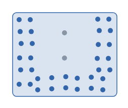
        </div>
        <figcaption>
          <code>Shape.box()</code>: real <code>enclose</code>, its fill painting
          over the gray dots (#986).
        </figcaption>
      </figure>
      <figure>
        <div class="shot">
          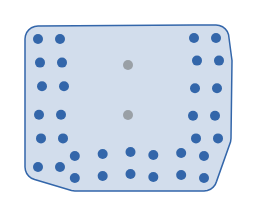
        </div>
        <figcaption>
          <code>Shape.hull()</code>: convex hull of the padded members.
        </figcaption>
      </figure>
      <figure>
        <div class="shot">
          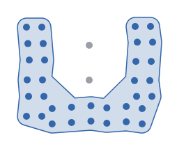
        </div>
        <figcaption>
          Alpha shape, alpha 40: openings wider than the disc carved out.
        </figcaption>
      </figure>
      <figure>
        <div class="shot">
          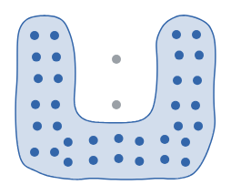
        </div>
        <figcaption>
          Bubble-set spine: a tree routed around the listed non-members.
        </figcaption>
      </figure>
    </div>
    <p>
      The concave hull's dent came from the members' spacing and ignored the
      gray dots; the spine's dent came from the <code>avoiding</code> list. On
      the Topology set only the spine kept b out:
    </p>
    <div class="grid2">
      <figure>
        <div class="shot">
          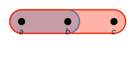
        </div>
        <figcaption><code>Shape.hull()</code> for {a, c} covers b.</figcaption>
      </figure>
      <figure>
        <div class="shot">
          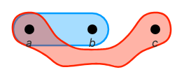
        </div>
        <figcaption>Bubble-set spine avoiding b.</figcaption>
      </figure>
    </div>
    <div class="grid3">
      <figure>
        <div class="shot">
          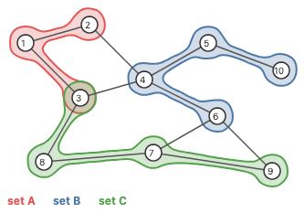
        </div>
        <figcaption>Hyperedges, bubble-set spine.</figcaption>
      </figure>
      <figure>
        <div class="shot">
          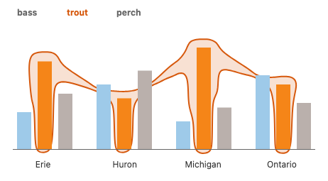
        </div>
        <figcaption>Trout, avoiding the bars and the axis band.</figcaption>
      </figure>
      <figure>
        <div class="shot">
          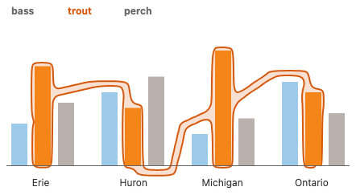
        </div>
        <figcaption>
          Trout, avoiding the bars only: one link went under the baseline.
        </figcaption>
      </figure>
    </div>
    <p>
      S1', the three-member spelling on a shared kernel, was the pick of v1 and
      v2. Hull and spine had no common dial, the middle (filled where dense,
      links where sparse) needed a fourth member, and a raw <code>alpha</code>
      brought a pixel length whose direction libraries disagree on.
    </p>
  </details>

  <details class="hist">
    <summary>v2: KelpFusion and bubble sets compared</summary>
    <p>
      Josh asked whether KelpFusion has the convex hull as a special case, and
      how it compares to a bubble set. Sources: Meulemans et al., "KelpFusion: A
      Hybrid Set Visualization Technique", IEEE TVCG 19(11), 2013 (<a
        href="https://www.microsoft.com/en-us/research/wp-content/uploads/2016/12/kelpfusion_tvcg2013.pdf"
        >author copy</a
      >); Collins, Penn, Carpendale, "Bubble Sets", IEEE TVCG 15(6), 2009 (<a
        href="https://vialab.ca/wp-content/publication_media/pdf/col2009c.pdf"
        >author copy</a
      >).
    </p>
    <h3>How KelpFusion is built</h3>
    <ol>
      <li>
        <strong>Connect the members.</strong> For every pair, the candidate edge
        is the shortest route clear of every other node's allocation area (a
        disc of radius <code>r</code> cut to the node's Voronoi cell, the part
        of the plane closer to it than to any other node). It keeps candidates
        by a shortest-path graph with parameter <code>t ≥ 1</code>: an edge
        weighs its length to the power <code>t</code> and is kept only if no
        other path is lighter. <code>t = 1</code> keeps everything (the convex
        hull); <code>t → ∞</code> gives the minimum spanning tree.
      </li>
      <li>
        <strong>Fill some faces</strong>: a face is filled if it is small enough
        (area per node below <code>A</code>), holds no non-member, and does not
        clash with a set drawn beneath.
      </li>
      <li>
        <strong>Draw</strong> the union of discs, edges of width
        <code>w</code> and filled faces; smooth; cut out non-member areas.
      </li>
    </ol>
    <figure>
      <div class="shot">
        
      </div>
      <figcaption>
        KelpFusion Figure 5: <code>t</code> from 4.5 (a tree) to 1 (the convex
        hull).
      </figcaption>
    </figure>
    <p>
      The convex hull is an exact special case for the graph, but the drawn
      shape is the hull only when every face can be filled and no non-member is
      inside, and even then it is not the hull grown evenly by a padding.
    </p>
    <h3>How a bubble set is built</h3>
    <p>
      Members are joined by virtual edges bent around non-member boxes; members
      and edges add energy and non-members subtract; the outline is an
      isocontour, with the threshold lowered until every member is inside. The
      paper says it "cannot guarantee that non-set member items will be
      excluded".
    </p>
    <figure>
      <div class="shot">
        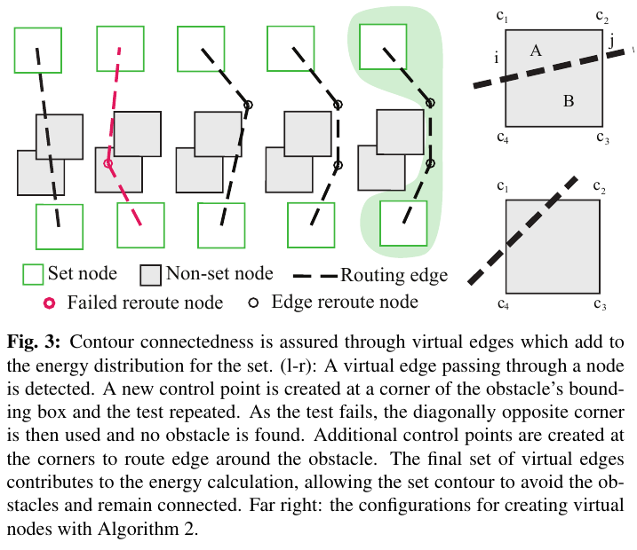
      </div>
    </figure>
    <h3>Side by side</h3>
    <p class="small">
      KelpFusion at <code>t = ∞</code>, 2, 1.5, 1, then the convex hull and a
      bubble set. Story-local KelpFusion with <code>A = ∞</code>, no Voronoi
      cut, straight-sided faces, no smoothing.
    </p>
    <figure>
      <div class="shot">
        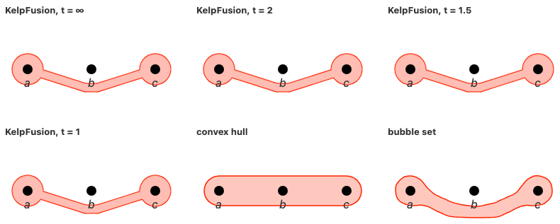
      </div>
      <figcaption>
        Topology: every <code>t</code> gives the same bent tube; only the hull
        covers b.
      </figcaption>
    </figure>
    <figure>
      <div class="shot">
        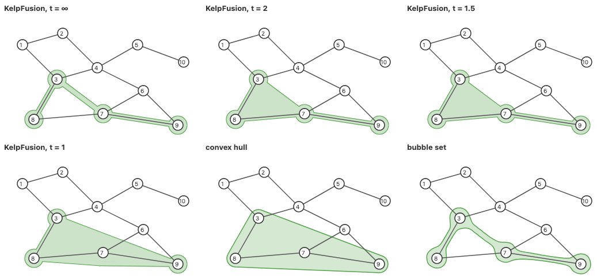
      </div>
      <figcaption>
        Hyperedges: KelpFusion uses positions only, so it does not follow the
        graph's edges.
      </figcaption>
    </figure>
    <figure>
      <div class="shot">
        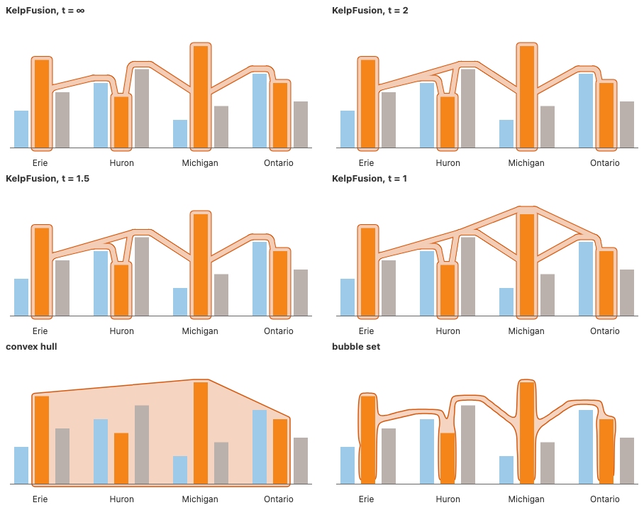
      </div>
      <figcaption>
        Trout: every face holds another bar, so KelpFusion stays lines at every
        <code>t</code>.
      </figcaption>
    </figure>
    <figure>
      <div class="shot">
        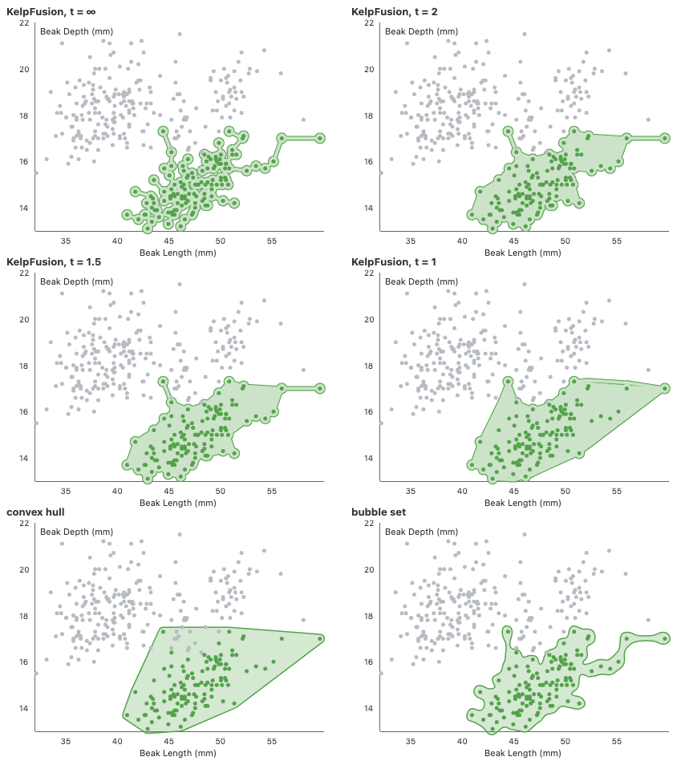
      </div>
      <figcaption>
        Penguins: at <code>t = 2</code> and 1.5 the dense core fills while
        stragglers stay attached.
      </figcaption>
    </figure>
    <p>
      In the paper's study (13 people, four overlapping sets on a map),
      KelpFusion scored 86.5% accuracy against 54.5% for Bubble Sets, and was
      faster. The conclusion then: KelpFusion overlapped hull and spine in part
      and replaced neither, which led to v3.
    </p>
  </details>

  <details class="hist">
    <summary>
      v3: the generalized KelpFusion (<code>Shape.blob</code> with
      <code>density</code>)
    </summary>
    <p>
      Josh asked whether KelpFusion could be generalized, with configurable
      circle sizes, to cover the usual hull, and whether it and the alpha shape
      could be unified. v3 introduced
      <code>Shape.blob({ density, neck, smoothing, avoiding, via })</code> with
      hull and spine as shortcuts. It picked links by KelpFusion's shortest-path
      graph at <em>t</em> = 1 / <code>density</code>, filled every closed face
      without an avoided node, and smoothed only by closing.
    </p>
    <p>
      Alpha shape and KelpFusion share a pipeline (keep some Delaunay links,
      fill some faces, grow the result, end at the convex hull) but not a
      parameter: the alpha hull is exactly the closing of the points by a disc
      of radius alpha (Edelsbrunner, Kirkpatrick, Seidel 1983; the match with
      closing is my derivation), its complex falls apart below half the widest
      gap and changes with scale, while KelpFusion's graph always stays
      connected and does not change with scale; and KelpFusion keeps long links
      without their triangles, which no alpha complex does.
    </p>
    <figure>
      <div class="shot">
        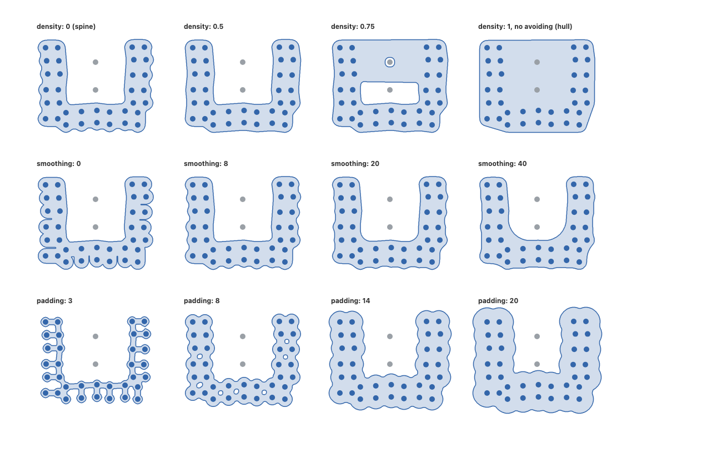
      </div>
      <figcaption>The v3 parameter grid on the U.</figcaption>
    </figure>
    <figure>
      <div class="shot">
        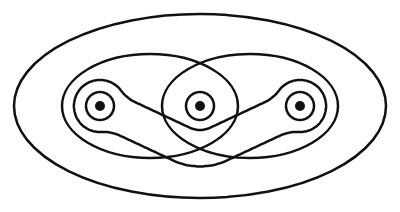
      </div>
      <figcaption>The v3 Munkres panel.</figcaption>
    </figure>
    <p>
      Josh's review of v3: alpha shapes "still seem to have a nice aesthetic to
      them because they're a bit more convex than the kelp comparisons"; the
      Munkres outline "still feels too shrinkwrapped"; and "I don't want to see
      a shape curvature change when the circle connects to the link." v3's
      outline was circle arcs, straight sides and closing arcs, so its curvature
      jumped at every join.
    </p>
  </details>

  <details class="hist">
    <summary>
      v4: the move to the current construction, and the rejected
      <code>curve</code> key
    </summary>
    <p>
      v4 made three changes, which are the current construction: blur the region
      and take its level ½; replace <code>density</code> with
      <code>convexity</code> (the alpha fill rule on a unitless scale, plus a
      spanning tree); and draw links that bound a filled triangle at full width.
      <code>density</code>'s middle (long links kept without their triangles) is
      no longer reachable; no example needs it.
    </p>
    <p>
      The comparison grids below put the classic alpha shape and v3 beside the
      new construction. Josh's verdict: the classic alpha shape fits the data
      worse than the new construction.
    </p>
    <figure>
      <div class="shot">
        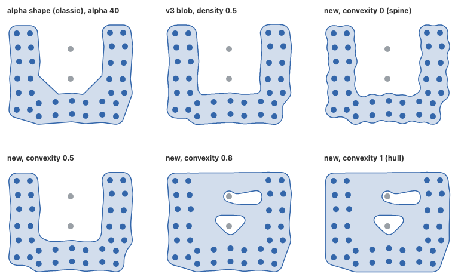
      </div>
    </figure>
    <figure>
      <div class="shot">
        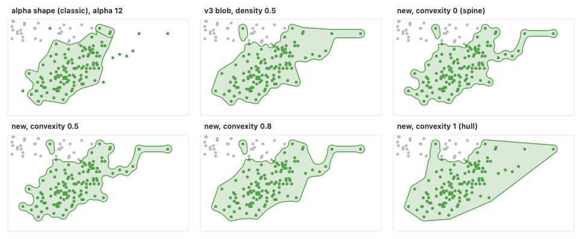
      </div>
    </figure>
    <figure>
      <div class="shot">
        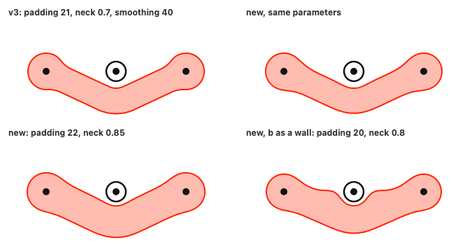
      </div>
      <figcaption>
        v3 with <code>padding: 21</code>, <code>neck: 0.7</code>,
        <code>smoothing: 40</code>; the new construction with the same
        parameters (same margins, no curvature jumps); and with
        <code>padding: 22</code>, <code>neck: 0.85</code>, the spelling now in
        Part 1.
      </figcaption>
    </figure>
    <h3>Three ways to get a curvature-continuous outline</h3>
    <p>
      <strong>(a) A convolution surface</strong>: add up a Gaussian bump along
      the skeleton and draw one iso-contour (the curve where the summed field
      equals a level). Where pieces meet their fields add, so the outline swells
      past the promised padding. Out.
      <strong>(b) A closed curve through the v3 outline</strong>: GoFish's
      data-space curves interpolate <em>y</em>(<em>x</em>) and its connector
      curves join two endpoints, and <code>catmullRom</code> is open and G1, so
      the prototype tried closed Catmull-Rom (G1), a periodic natural cubic
      spline (C2) and a Yuksel-style C2 blend of circles (Yuksel, ACM TOG 2020,
      listed in #957; my own variant). <strong>(c) Blur the region</strong>:
      chosen.
    </p>
    <figure>
      <div class="shot">
        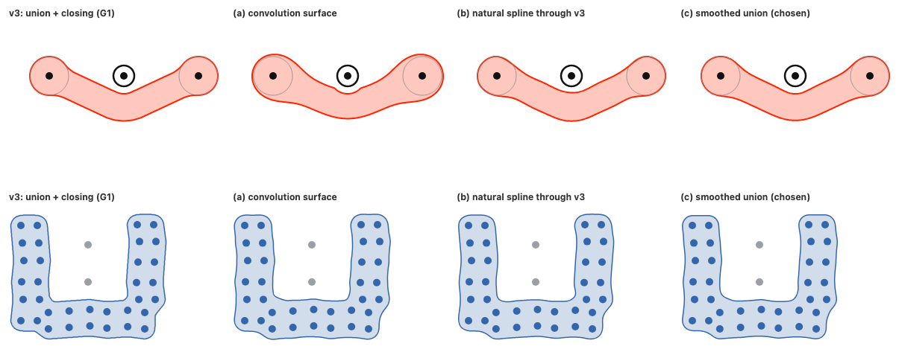
      </div>
      <figcaption>
        Top: Topology {a, c} with dashed rings at the promised padding. Bottom:
        the U at <code>convexity: 0.5</code>. Columns: v3, (a), (b), (c).
      </figcaption>
    </figure>
    <figure>
      <div class="shot">
        
      </div>
      <figcaption>
        v3 jumps between 1/<em>R</em>, 0 and −1/40 at every join. The blurred
        region moves smoothly, keeps padding (26.0 px, asked 26) and clearance
        (10.1 px, asked 10). The curves through v3 either keep v3's sudden
        changes (knots 10 px apart) or ripple and cut into b's clearance, 8.1 to
        8.5 px instead of 10 (knots 25 px apart).
      </figcaption>
    </figure>
    <p>
      <strong>The <code>curve</code> key, rejected.</strong>
      <code>enclose({ shape: Shape.hull(), curve: Curve.&lt;x&gt;() })</code>
      would reuse the relational marks' key, but no <code>Curve</code> member is
      closed, a curve through outline points breaks <code>padding</code> and
      <code>clearance</code>, and it would be a second smoothing control. The
      findings go to #957: the closed Yuksel-style blend is easy to build and
      C2, and it ripples where point spacing is uneven.
    </p>
    <p>
      v4 also tried treating an avoided node inside the set as a wall during the
      closing, so the band wrapped b in a U. Dropped; see the retired decisions.
    </p>
  </details>

  <details class="hist">
    <summary>v5: <code>via</code>, replaced by edges as members</summary>
    <p>
      v5 took a graph's edges as a strategy parameter,
      <code>Shape.blob({ via: selectAll("edges") })</code>: each listed edge
      between two members was a link, always kept and never rerouted. It was
      replaced because the edges can simply be members, which removes a strategy
      parameter that holds refs and draws the spine without links the graph does
      not have.
    </p>
    <pre><code>enclose({ members: "node",
          shape: Shape.blob({ convexity, smoothing,
            via: selectAll("edges"),
            avoiding: selectAll("nodes"), clearance: 3 }),
          padding: 6 })</code></pre>
    <figure>
      <div class="shot wide">
        
      </div>
      <figcaption>
        At 0 each set follows the graph's edges plus the spanning tree over node
        centers, and a cycle around an empty space leaves a hole (sets A, B and
        C). From 0.5 the triangles inside those cycles fill.
      </figcaption>
    </figure>
    <p>
      v5 also showed the Gentoo species alone, with the other two avoided and
      cropped to its cluster; the penguins tab now shows all three species.
    </p>
  </details>

  <details class="hist">
    <summary>
      v6: <code>smoothing</code>, replaced by <code>roundness</code>
    </summary>
    <p>
      Josh: convexity and smoothing overlapped; both fill gaps. Until v6 the
      blob had a closing step and a different rule for avoided nodes.
    </p>
    <ul>
      <li>
        A triangle was filled only when no avoided node's keep-out zone touched
        it, so an avoided node inside the set left a hole shaped like the
        triangles around it.
      </li>
      <li>
        The union of the pieces was closed by a disc of radius
        <code>smoothing</code>, which filled gaps narrower than about twice that
        radius.
      </li>
      <li>
        The blur width was σ = ½ min(<code>smoothing</code>, thinnest piece).
      </li>
    </ul>
    <p>
      So <code>smoothing</code> filled gaps the way <code>convexity</code> does,
      and it also reshaped the holes. Small values left triangle holes, middle
      values half-rounded them, and only large values filled the triangles back
      in and cut just the circles. "Why these knobs are orthogonal" measures the
      overlap. The old dataset grids, with columns <code>convexity</code> (0,
      0.5, 0.8, 1) and rows <code>smoothing</code> (half the padding, equal to
      it, twice it), or columns <code>neck</code> where convexity did nothing:
    </p>
    <figure>
      <div class="shot wide">
        
      </div>
    </figure>
    <figure>
      <div class="shot wide">
        
      </div>
    </figure>
    <figure>
      <div class="shot wide">
        
      </div>
    </figure>
    <figure>
      <div class="shot wide">
        
      </div>
    </figure>
    <figure>
      <div class="shot wide">
        
      </div>
    </figure>
    <figure>
      <div class="shot wide">
        
      </div>
    </figure>
  </details>

  <details class="hist">
    <summary>v7: the same outline, computed in milliseconds</summary>
    <p>
      Josh: the computation was too slow (122 ms per slider step on the
      penguins). v6 rasterized the region on a 0.5 px grid, blurred it, and
      checked the topology with more blurs, so its cost grew with the area of
      the drawing. v7 keeps the knobs and the promises and changes how the
      outline is computed (construction steps 4 to 6): the region's outline is
      traced exactly from closed-form distances, and it is rounded by smoothing
      along its own length, with circles held in place. So the cost grows with
      the length of the outline, and a change of <code>roundness</code> reruns
      only the rounding. A Gaussian along the outline cannot join two pieces or
      open a hole, so v6's topology check became a check that loops do not
      cross. Two rules were added for what the blur did for free: an inlet
      narrower than 1.5 σ is closed before smoothing, and the outline is kept
      out of every keep-out zone by a smooth maximum. Routed links now follow
      the avoided nodes' keep-out circles exactly where they wrap them.
    </p>
    <p>
      What changed in the drawings: the band under b in the Topology example now
      hugs b's ring (gap 7.6 px for 6 asked, was 11.0), and its joins there turn
      over about 10 px instead of 20; holes are exact circles to 0.001 px (were
      within 0.7 px); the hull preset is within 0.3 px of the true padded hull
      (was 0.8 px outside); and rounding now stops at the smallest circle in the
      region, keep-out circles and box corners included, so the trout bars'
      corners round less at 8 px than before (the cap is their 4 px corner
      radius). Speed in the playground: penguins about 11 ms per slider step,
      the other datasets 1 to 3 ms.
    </p>
  </details>

  <details class="hist">
    <summary>Retired decisions</summary>
    <ul>
      <li>
        <strong><code>smoothing</code> on <code>Shape.blob()</code></strong>
        (v6). Replaced by <code>roundness</code>. Josh: convexity and smoothing
        overlapped; both fill gaps.
      </li>
      <li>
        <strong>Leave out triangles that touch an avoided node</strong> (v6).
        Replaced by filling them and cutting the node's clearance circle out, so
        an avoided node inside the set is always a round hole.
      </li>
      <li>
        <strong><code>via</code> on <code>Shape.blob()</code></strong> (v5).
        Replaced by edges as members (open decision 13).
      </li>
      <li>
        <strong
          ><code>alpha</code> as a pixel radius on
          <code>Shape.hull()</code></strong
        >
        (v1). Retired in v3; alpha came back in v4 as <code>convexity</code>.
      </li>
      <li>
        <strong
          >A shared kernel for three members, with
          <code>Shape.kelp({ t })</code> left out</strong
        >
        (v1). Retired in v3, when hull and spine became shortcuts of one member.
      </li>
      <li>
        <strong>Leave alpha out</strong> (v3). Retired in v4: alpha is back, as
        <code>convexity</code>.
      </li>
      <li>
        <strong><code>density</code></strong> as the blob's dial (v3). Dropped
        in v4 for <code>convexity</code>.
      </li>
      <li>
        <strong
          >An avoided node inside the set as a wall during the closing</strong
        >
        (v4 decision 13). Retired. Josh: creates a cusp (a point where the
        outline turns sharply).
      </li>
      <li>
        <strong>A <code>curve</code> key on <code>enclose</code></strong> (v4).
        Rejected; open decision 12 asks Josh to confirm.
      </li>
    </ul>
  </details>
</main>

<script>
  (function () {
    var list = document.getElementById("ds-tabs");
    if (!list) return;
    var tabs = Array.prototype.slice.call(
      list.querySelectorAll('[role="tab"]')
    );
    var KEY = "bh-dataset-tab";
    function select(tab, focus) {
      tabs.forEach(function (t) {
        var on = t === tab;
        t.setAttribute("aria-selected", on ? "true" : "false");
        t.tabIndex = on ? 0 : -1;
        var panel = document.getElementById(t.getAttribute("aria-controls"));
        if (panel) panel.hidden = !on;
      });
      if (focus) tab.focus();
      try {
        localStorage.setItem(KEY, tab.id);
      } catch (e) {}
    }
    list.hidden = false;
    var saved = null;
    try {
      saved = localStorage.getItem(KEY);
    } catch (e) {}
    var start =
      tabs.filter(function (t) {
        return t.id === saved;
      })[0] || tabs[0];
    select(start, false);
    tabs.forEach(function (t, i) {
      t.addEventListener("click", function () {
        select(t, false);
      });
      t.addEventListener("keydown", function (e) {
        var j = null;
        if (e.key === "ArrowRight" || e.key === "ArrowDown")
          j = (i + 1) % tabs.length;
        else if (e.key === "ArrowLeft" || e.key === "ArrowUp")
          j = (i - 1 + tabs.length) % tabs.length;
        else if (e.key === "Home") j = 0;
        else if (e.key === "End") j = tabs.length - 1;
        if (j !== null) {
          e.preventDefault();
          select(tabs[j], true);
        }
      });
    });
  })();
</script>
